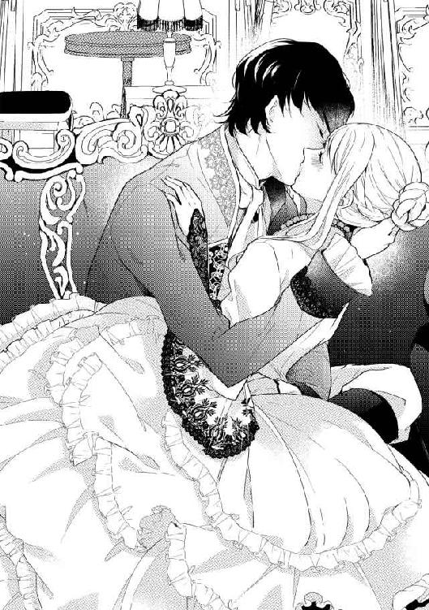
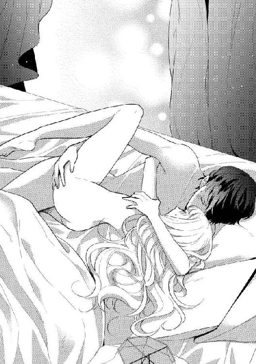
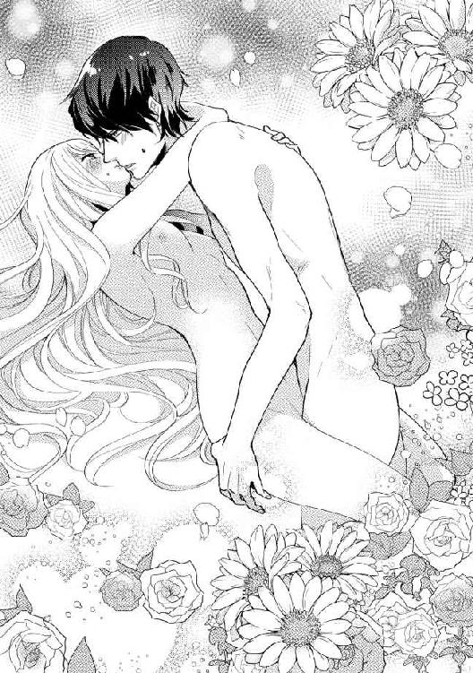

| 皇帝陛下は花嫁狩り ～いきなり私が皇妃様!?～ (LUNA文庫) | |
| 宇佐川 ゆかり | |
| 天海社／LUNA文庫 (2018) | |
皇帝陛下は花嫁狩り
～いきなり私が皇妃様!?～
[著者]宇佐川ゆかり
[イラスト]まろ
プロローグ
「あ、やぁ......アルフレート様、も、無理――！」
高々とあられもない声を部屋中に響かせて、ヘレーネは絶頂に達した。腰だけを高く持ち上げ、背後から貫かれた体勢は、深いところまで受け入れる分快感も大きい。
彼の顔が見えないからか、いつもより強い愉悦に襲われるのも羞恥心を煽った。ヘレーネを貫いたアルフレートの方は憎らしいくらいに余裕たっぷりで、腰を強く押しつけたまま小刻みに揺さぶってくる。
「やぁぁっ！」
奥のいいところをぐりぐりと突かれて、ヘレーネはシーツに胸を押しつけたまま背中をしならせた。
彼と肌を重ねるようになってからひと月。夜ごと与えられる悦楽は深くなるばかり。
彼は、ヘレーネの敏感な場所をすべて探り当ててしまって、絶対にかなうことはないのだと思い知らされる。
「まだだ。ほら、ここも弄ってやるから」
「あっ、あぁぁっ、それ......だめぇ――！」
背後から貫かれたまま、繋がっている場所を指でなぞられて悲鳴を上げる。こんなにも感じているのに、快感を重ねられたら意識を飛ばしてしまいそうだ。
「まだ、大丈夫だろう？ こんなにも強く締めつける元気はあるんだから」
「違う......無理、だめ......もうっ......」
すがるものを求めて、手が力なくシーツの上をさまよう。結局、皺になるくらい強くシーツを握りしめた。
打ちつけられる腰の動きが激しさを増し、下肢の奥から痺れるような快感が広がってくる。
今夜はもう、何度も果てて、その回数を数えることもできない。それなのにまだ、アルフレートはヘレーネに快感を与えようとする。
「ひぁぁあっ！」
繋がっている場所を撫でていた指が、ぷくりと膨れ上がった淫核をとらえる。とたん、またもや高みに放り上げられて、全身を強く震わせた。
強い悦楽に意識を奪われているうちに、腰を掴む彼の手に力がこもる。
「んんんーっ、あ、あぁぁっ！」
「ヘレーネ、俺も......いく――！」
さらに強く穿たれて、目の前にいくつも星が散る。奥に熱い飛沫が放たれるのを感じながら、また絶頂へと押し上げられた。
最後の快感に身を震わせて、ヘレーネはシーツの上に崩れ落ちる。
「......もう、知りません」
今夜もさんざん乱されて、快感の余韻から戻ってくれば羞恥心ばかりが膨れ上がる。ヘレーネがぷいと顔を背けたら、笑ったアルフレートは頬に唇を押しつけてきた。
「ヘレーネが可愛すぎるのが悪い――許せ」
「許せ、などと言われても」
甘い声音でそうささやかれれば、今の振る舞いも完全に許す気になってしまうのだから単純なものだ。
こうして身体を寄せ合っている間だけは、すべてを忘れても許されるような気がする。
彼が、ラウエルン帝国の皇帝であることも。ヘレーネがただの町娘でしかないことも。
第一章 いきなり皇妃と言われても
「ヘレーネ、あなた白い花冠はどうしたのよ？」
友人の言葉に、ヘレーネは目を瞬かせた。
「白い花冠って？」
「いやあね、今年の花祭りは花嫁狩りでもあるのよ。忘れていた？」
ラウエルン帝国の都フィネラ。
この都市では毎年、春に花祭りと呼ばれる大祭が行われる。
皆、広場に集まって歌ったり踊ったりして春の訪れを祝うのだが、その時、未婚の娘達は生花で作った花冠をかぶるのが慣例だ。
白を使わないという一点をのぞけば、花冠の色に決まりはないが、決まった相手がいない者は、ピンクの花冠をかぶって目印としているために、この時期には若者達は意中の相手に想いを告げやすくなっている。
そして、白を使わないというのには理由があった。
ラウエルン帝国を建国した皇帝レイオスは、狩りに出かけた時、野草をつみに出ていた娘シャーナに一目で夢中になり、そのまま連れて帰ってしまった。
これは、賢帝とまで称された彼がその生涯において唯一無茶をしでかした若気のいたりとも伝えられている。だが、平民の娘を皇妃にするなんてという周囲の批判をものともせず、彼女は立派な皇妃となった。
以来、帝国は五百年もの長きにわたり繁栄を謳歌し、皇族の妃は、建国の皇帝にならって花祭りの時期に「狩る」というのが決まりなのだ。
その時シャーナが手にしていたのは白い花であったことから、白い花冠をかぶっている者は「皇帝に見染められたいと願っている」という目印になっている。
「ばかばかしい。フィネラに結婚適齢期の娘が何人いると思ってるのよ？ 皇帝陛下が私に目をとめるとでも？」
フィネラには何千もの結婚適齢期の娘がいる。そのうち二割は婚約が決まっているとしても、まだ大勢いるわけで、ヘレーネが皇帝の目にとまる機会なんて限りなく低い。
「馬鹿ね。今の皇族男子って、皇帝陛下をのぞいたらおじいちゃんしかいないのよ？ 私達が白い花冠をかぶる機会なんてもうないんだから、かぶっておきなさいよ」
「そんなこと言っても」
今日はピンクの花冠をかぶるつもりだったのに――とヘレーネはふくれっ面になった。絶賛恋人募集中なのだ。
「白い花冠なんかかぶってたら、皇妃の地位目当てと思われて、誰も相手してくれないじゃないのよ」
「大丈夫大丈夫。白い花冠をかぶってるってことは、恋人いませんの主張でもあるんだから。夕方になったら、誰か声をかけてくれるわよ」
「......そんなものなの？」
毎年花祭りは行われているものの、実際にヘレーネが参加するのは今年が初めてだった。というのも、ヘレーネの家、ハルダー家は代々医者の家系だ。近隣の住民の怪我も、病気も、お産もハルダー家が手を貸してきた。
祭りの時期にはワインやエールの飲み過ぎで羽目を外す者も多く、ハルダー家の治療院は毎年大賑わいなので、祭りを楽しむより両親の手伝いの方で忙しかった。
去年もおととしもその前も、屋台のつまみ食いには出かけたものの、ダンスには参加せずに戻っていた。
声をかけられては困るから花冠をかぶることもせず、ぱぱっと屋台を見て回って帰宅するのがいつものことだったのである。
友人とそんなやりとりをしていたら、白い花冠を手に母が部屋に入ってきた。
「嘘っ、お母さん、なんで白い花冠なんか――」
「馬鹿ね。こういう祭りは乗った者勝ちなのよ。いつも参加しないんだから、今年くらいは乗っておきなさいよ」
「もー、お母さんまでっ！」
ヘレーネは膨れたが、母の無言の圧力に負けて、白い花冠を頭の上に乗せて鏡を見る。
いつもは邪魔にならないよう、一本にまとめている明るい茶の髪も、今日ばかりは解いて肩から背中にかけてふわふわとさせている。キラキラしている緑色の瞳、形のよい鼻に小さめの唇。絶世の美女というわけでもないが、中の上といったところか。
「その赤い服、素敵ね」
「そうでしょう？ 今日のためにずっと準備してきたんだから」
この日のために用意した赤い晴れ着には、金の飾り紐と銀の飾り紐をあちこちにつけた。十八になる記念の祭り――この国では十八が成人として認められる年――に、飾り紐をたくさんつけた服を着ようと、三年前から準備してきたかいがあったというものだ。
友人が晴れ着を誉めてくれると、今ぶぅぶぅむくれていたとは思えないくらいに、気分が高揚してきた。
春のうららかな一日。今日だけは、治療院のことも忘れてしまおう。
酔っぱらった人達が街中で喧嘩になったり、祭りの見物に来た人が怪我をしたりと、今日も両親の治療院は忙しい。十八になった記念の年だからこそ、今年だけは祭りに参加する方を選んだのだ。
「お小遣い持ってきた？」
「もちろん！」
街中のあちこちにある広場には、ダンスをしにやってきた人々のために屋台も並んでいる。甘い香りを放つ焼き菓子、蜂蜜と果汁で割ったワイン。エールもあるし、蜂蜜酒も。串に刺して焼いた肉に、揚げた魚。香辛料の香りも漂っていて、ヘレーネのお腹がぐぅっと鳴る。
「ちょっと、待って。魚のフライを挟んだパンを先に食べてもいい？ 今日、朝ご飯食べそびれちゃって」
「何かあったの？」
「ううん。隣の家のおばあちゃまが、お祭りの準備で興奮しすぎて熱を出したってだけ。参加できないって残念がってたわ」
「それは大変。ちゃんと食べておかないとだめよ。今日は夜まで踊るんだから！」
祭りの日ということもあって、街中はいつもと違う活気に溢れている。香辛料をたっぷり効かせた魚のフライを挟んだパンを買い、果物をつけこんだワインを炭酸水で割ったもので流し込む。
「......ほら、見なさいよ、皆白い花冠をかぶっているじゃないの」
友人がくすくす笑いながらヘレーネをつつく。
今年は、他の色の花冠より白い花冠をかぶっている娘の方が圧倒的に多い。皆、皇帝に見初められるとは思っていなくても、楽しいことには乗っておこうということなのかもしれなかった。
踊るような足取りで広場に足を向けたら、そこにはもう多数の少女達が集まっていた。皆、この日のために用意してきた晴れ着に花冠。彼女達が身動きする度にふわりふわりと花の香りが空中に漂う。
弦楽器や打楽器を持ち出した住民達が好き勝手に音楽を奏で、輪になって踊っている人達の間にヘレーネも入っていく。
（治療院にいないのってちょっと落ち着かないけれど......すごく......楽しい！）
いつも、にぎやかな音楽は治療院の中で聞いていた。祭りに参加しなかったことを悔いているわけではないし、自分の生き方に不満もない。
ステップを踏み、ジャンプをし、くるりとターンする。手を動かせば、腕にはめた何本もの腕輪がしゃらしゃらと音を立てた。友人は足首にも輪をはめていて、足元からもしゃらしゃらと音がする。
（毎年、喧嘩をして運ばれてくる人がいるんだものね......今年は何もなければいいけれど）
なんて、頭の隅をかすめ、慌てて首を横に振る。
今年は、皆、いつも以上にそわそわしているようだ。
（そうね、皇帝陛下がいよいよ花嫁選びに乗り出すんだもの）
ラウエルン帝国皇帝の名はアルフレート・ウルフリーシュ。今年、二十歳になったところのはずだ。
この年になるまで彼の結婚が決まらなかったのは、さまざまな事情がある。
もともと、彼の上には四人の兄がいたために、皇帝の地位なんて彼のところに回ってくるはずもなかった。アルフレートも軍人になって国に尽くすことを望み、軍で修行していたらしい。
だが、彼が十四になった年、貴族達の間に病が蔓延した。平民の感染者はほとんど出なかったことから、平民には手が届きにくい高級な酒か食品が原因だろうと言われているが、現在でも理由は判明していない。
皇宮で暮らしていた皇族の間にも大半の死者が出た中、軍の訓練のために皇宮を離れていたアルフレートと、訓練の成果を自分の目で確認していた皇帝は病に感染しないですんだ。
皇宮に残っていた兄皇子達は皆病で命を落としたため、アルフレートが急きょ皇太子と決められたのである。皇族とはいえ、もともとは皇帝になることをまったく期待されていなかった皇子だ。
皇太子に定められてから大急ぎで君主として立つための教育が施され、その教育が終わって縁談を調えようかというところで、今度は皇帝が倒れてしまった。
数日病床にあった後、皇帝は死亡。アルフレートが即位することになったのは一年前のこと。
ようやく喪が明けて、今年花嫁選びを行うことになったというわけだ。
（......ようやくお妃様を選ぶことができるようになったのだから、おめでたいことよね）
そうは思うものの、彼に特別な感情を持っているというわけではない。国民として、彼がいい伴侶を迎えられればいいなと思うだけだ。
途中、休憩をして飲み物を飲んだり、屋台をひやかしに行ったりしながら、祭りを楽しんでいるうちに、あっという間に夕方になってしまった。
「......そろそろ、祭りも終わりね。私達、どうやらあぶれてしまったみたい」
「本当ね、まあしかたないけど」
友人が先にため息をつき、ヘレーネはそれに同意した。
（......なんだかなぁ、もう）
見れば、白い花冠をかぶった少女達は、半分以上が誰かに声をかけてもらったようだ。皆、男性と連れ立って歩いていくのを見ていたら、なんだか惨めな気分に陥ってきた。
祭りはまだまだ続くし、むしろ日が暮れてからが本番でもあるのだが――。
「この時間まで、誰にも声をかけられないなんて、望み薄ね。もう、帰る？」
「その方がよさそう。どうせ、これから酔っぱらって怪我をした人達が押し寄せてくるんだろうし、家の手伝いに戻るわ」
誰かに声をかけてもらって、一緒に踊って。それから――手を繋いで、家の前まで送ってもらう。
そんな一日を過ごせると勝手に思い込んでいたが、どうやら、現実はそんなに甘くないらしい。
あぶれてしまった友人ともども、広場を出て、家の方へと歩き始めた時――不意に脇から出てきた腕に腰を抱えられた。
「......えっ、えっ――きゃああああっ！」
悲鳴を上げるが、誰も助けに来てくれない。どうして――慌てて相手を押しのけようとしたら、不意にラッパの音が響き渡った。
「――者ども、下がれ！」
そう命じる声に、周囲がしんと静まり返る。
「え、え、あの......ええええっ？」
ヘレーネが、まったく事情を把握できていないうちに、腰に手を回した男は悠々と歩き始める。
「わが花嫁が決定した」
彼がそう告げたのは、気のせいだろうか。
友人が、遠くから名前を呼ぶのが聞こえてくるけれど、頭の中が真っ白になってしまって応える余裕なんてなかった。
（......これって、まさか）
顔を上げることはできないが、ちらりと隣に視線をやればやたらに上質の衣類が目に飛び込んでくる。紺の地に銀糸で精緻な刺繍が施されたそれは、庶民が身につけられるような品ではない。
さらに、先ほど聞こえた「花嫁が決定した」という言葉。
まさか、という思いと、本当なのか、という思いが交錯する。
少し離れたところにある馬車に押し込められ、向かい側に座った人の顔を見て、予想はしていながらも悲鳴を上げそうになった。
（や、やっぱり......でも......信じられない......！）
だって、目の前にいるのは――肖像画でしか見たことなかったが、皇帝アルフレートその人だったのだ。
力強い光を放つ黒い瞳。まっすぐにヘレーネを見つめるその瞳に吸い込まれそうになる。とたん、心臓が跳ね上がるのを自覚した。
力強い顎の線、強く引き結ばれて見方によっては不機嫌にも見えかねない唇。少し癖のある黒い髪は、短めに整えられている。整った顔立ちではあるが、どこか近寄りがたさも覚えた。
「あ、の......」
慌てて頭に手をやり、かぶっていた花冠を膝の上に下ろす、どうしたらいいのかわからず、視線をうろうろとさせていたら、正面に座っていたアルフレートが口を開いた。
「ヘレーネ・ハルダー」
「は、はいっ！」
名を呼ばれ、裏返った声が上がった。
（どうしよう、どうしよう......いったい、なんで、こんなことに......）
白い花冠をかぶっていれば、皇帝の目にとまる機会があるかもしれない、なんて言われているけれど、まさか自分にそんな幸運が回ってくるとは思っていなかったのだ。
「あの、陛下......？」
こちらから口を開くのは不敬ではないかと思ったものの、問わずにはいられなかった。これから、自分はどうなるのか、と。
だが、アルフレートはヘレーネの言葉には何も答えてくれなかった。「出せ」と短く一言命じるなり、馬車が軽やかに動き始める。
「皇妃様が決定したぞ......！」
「どこの娘だ？」
「わからんが......何にしてもめでたいことだ」
めでたい、めでたい、と周囲から祝福の言葉が聞こえてくる。けれど、ヘレーネは緊張でがちがちに固まったまま、顔を上げることもできなかった。
（......どうして、私......なのかしら......）
馬車の外からかけられる祝福の言葉も、耳を素通りしていくだけ。
賑わう通りを走り抜けた馬車が停められたのは、ヘレーネの家の前だった。先ぶれの者が行っていたのか、慌てた様子の両親が、家の前で待っている。そして、多数の人がつめかけていた。
馬車の扉に手をかけて降りようとしたら、彼はその手に自分の手を重ねてヘレーネを制した。
「ヘレーネ、馬車から降りるな。ここで降りたらもみくちゃにされるぞ」
「はいっ！ あの、でも......」
ならば、なぜここに連れてきたのだろう。ヘレーネの疑問に答えるように、アルフレートは窓から顔をのぞかせた。
「娘を俺の妃として連れていく。今後のことは、また日を改める――よいな。会う機会は必ず作る」
「ふ、ふつつかな娘ではございますが......」
父が、馬車に向かって深々と頭を下げる。母もそれにならって頭を垂れた。
（ふ、ふつつかなって......）
いや、たしかにふつつかなというのがこういう場合の決まり文句なのだろうが。
膝の上で花冠をぎゅっと握りしめた手が、ヘレーネの動揺を如実に表している。
「馬車を出せ」
低い声でアルフレートが命じ、馬車は再び走り始めた。
（......こういう時って......どうするものなのかしら）
白い花冠。母から手渡されたそれを見つめたまま、視線を上げることができない。目の前からはアルフレートの鋭いまなざしを感じているのに。
沈黙が怖いけれど、世間話を持ちかけるわけにもいかないだろうし、どうにも落ち着かない。
緊張のあまりに手に嫌な汗がにじむ。晴れ着のスカートに手をこすりつけて、その汗をごまかそうとしていたら、不意に向かいの席から手を伸ばされた。
「ひゃあっ！ ......あの、申し訳......」
皇帝に手を取られて、妙な声を上げるなんて不敬以外の何物でもない。取られた手を、引き抜くこともできずに、ただ、目に涙をにじませただけだった。
「――働き者の手だな」
「あ、あ、ありがとう......ございます......」
実際のところ、ヘレーネの手はとても荒れている。父の指示する調合にしたがって薬を作る時に、火花が散ってしまったり、植物でかぶれたりするからだ。
そんな手を、彼はいとおしそうに握りしめている。大きな両手で右手を包み込まれ、ヘレーネはなんとも言えない気分に陥った。
いったい、彼は――何を考えて、ヘレーネを選んだのだろう。
（......私のことを知っていた......？）
だが、そんなこともないと思う。馬車に連れ込んでから、名前を確認された。知っていたのなら、そんなことをする必要はないはず。
懸命に考えをまとめようとするけれど、いとおしそうに手を握りしめる皇帝を目の当たりにするという、普通なら考えられない状況に、頭の方がついてこない。
「――今夜、お前は俺の妃になる」
「こ、今夜ですか」
いや、狩られた以上、花嫁になるのは決定事項かもしれないが。あまりのことに声が裏返った。
ぱっと顔を上げたものの、やはり恐れ多い。勢いよくまたうつむいた。その間も、彼の手に包み込まれた自分の手が気になってしかたない。
建国の伝説については、子供の頃に何度も絵本で読んだから知っている。そして、花嫁狩りの風習が、そこから続いているのも知ってはいた。
まだ、現実のものとして認識はできていないけれど。
（だって......）
ヘレーネが信じられなくてもしかたない。
皇帝の妃は、花祭りの時に「狩られる」のが決まりとはいえ、前皇帝もその前の皇帝も、皇妃に迎えたのは貴族の娘だったし、それ以外の皇族も平民の妻を迎えたなんて、ここ数十年は例がなかったはずだ。
もちろん妃を選ぶ時には、白い花冠をかぶった娘を皇族が皇宮へと連れていかれるのだが、形式的なものだと思っていた。
「嫌だったのか？ 白い花冠をかぶっていたから、てっきりお前もそのつもりなのだと」
「いえ......陛下、お許しください......ただ、頭がついてこなくて」
街中で育ち、時には近所の男の子達と取っ組み合いの喧嘩もした。十歳を過ぎた頃からは少しずつ両親の手伝いをするようになって。
いつか、両親の営む治療院をヘレーネと一緒に引き継いでくれるような人と結婚するものだと思い込んでいたから、頭がついてこないのだ。
「フィネラには何千人という娘がいます。だから、私が......その、陛下のお目にとまるって全然考えてなくて」
どうしよう。彼に取られたままの手が、また変に汗ばんでいる気がする。
だが、皇帝の手から自分の手を引き抜くというのもまた問題になりそうで、ヘレーネは固まったままだった。
「そんなもの。俺が決めたからそれでいいんだ」
目の前にいるアルフレートが、少しだけ不満そうな顔になる。そうすると、二十歳という実年齢とさほど変わらないように思えてきた。今の今まで、年よりずっと年長のように見えていたのに。
「......でも、私」
皇宮に入って皇妃となる。白い花冠をかぶっていても、本当の意味で覚悟していたわけではなかった。ただ、友人と一緒に、その場の勢いに乗せられただけで。
「今は、それでいい。少しずつ俺のことを知ってもらえれば」
小さな声で彼が言う。その懇願するような声音に、胸の奥で何かが蠢いたような気がした。
馬車が停められたのは、皇宮の一番奥と思われる場所だった。皇帝一族がここで暮らしているのだ。
馬車から降りると、アルフレートはヘレーネの方を振り返った。
「お前の部屋に案内する」
「私の、部屋......」
足を踏み入れた皇宮は、見たこともないほど壮麗だった。床にはさまざまな色合いの大理石のタイルがモザイク状に敷き詰められている。
廊下の壁は真っ白に塗られ、すべての柱に細やかな彫刻が施されていた。花祭りの時に花嫁を「狩る」からか、さまざまな花が複雑な模様となって彫り込まれている。
その柱もおそらく大理石なのだろう――あまりにもまばゆくて確信は持てなかったけれど。
それから、通り過ぎる扉も真っ白に塗られていて、扉の金具のところだけ、金がかぶせられている。扉の取っ手にもまた細かな彫刻が施されていて――本当に、ここは自分と同じ人間が暮らすところなのかと疑問を覚えてしまうくらいだ。
皇帝が花嫁を連れて帰ってきたというのが知られているからか、すれ違う使用人達は二人の姿を見かける度に、丁寧に頭を下げて見送ってくれる。
（私は、こんな場所にいていい人間ではないのに......）
こんな風に、花嫁として足を踏み入れるなんて、想像したこともなかったからいたたまれない。
やがてアルフレートが足を止めたのは、廊下をかなり進んだところだった。
「ここが皇妃の間だ。これから、お前の生活は、ここを中心に行われることになる」
「......はい」
皇帝が自ら扉を開いてくれるというとんでもない経験をした後、ヘレーネは部屋の中に足を踏み入れた。
「わ、あ......」
他に、なんて言ったらいいのか、想像できなかった。
どっしりとした紺のカーテンが窓にかけられ、室内は白を中心に整えられている。磨き抜かれた家具は、マホガニー製だろうか。家具の一つ一つにもまた、精緻な装飾が施されている。タイルがはめ込まれていたり、彫刻が施されていたりと、庶民の生活からは想像もできない豪華さだ。
ソファの座面には、金糸と銀糸で刺繍の施された重厚な布が張られていて、座るだけで緊張してしまいそうなくらいだ。
（......でも）
ちらりと視線を部屋中に走らせた。ソファ、テーブル、飾り棚。だが、この部屋にはベッドがない。
これでは、どこで休めばいいのかわからない。
廊下に面した壁だけではなく、室内に入って左右の壁にもまた扉があった。
「それと、この向こうが寝室、あちらが――支度部屋、だったか。親や友人を招待したければ、廊下を行ったところにある部屋を使え」
「――あの」
やっぱり、この部屋は落ち着かない。だって、精いっぱいの晴れ着を身に着けてはいるけれど、この部屋には不釣り合いだ。
金と銀の飾り紐をあちこちに結んだ晴れ着を見下ろしていたら、不意に頭を抱え込まれた。
「――俺の妃になるのは嫌か」
「い、いえっ、そんな、滅相もないっ！」
返事をしてから、あれ？ と考え込む。
自分は――妃になりたいと積極的に望んだことはなかったけれど、少なくとも全力で嫌だというほど嫌っているわけでもない。
彼の心臓に耳を押しつける形で抱え込まれて、ヘレーネは自分の鼓動が速まっているのに気がついた。嫌ではない。それどころか、どきどきしている。
「――ああ、イルマ、来たか」
「お待ちしておりました」
不意に人の声が聞こえて、アルフレートの腕の中で飛び上がりそうになった。彼の腕の中からこわごわと振り返ると、そこに立っていたのは、ヘレーネの母くらいの年齢の女性だった。
白髪の交ざりかけた黒髪を、きちんと束ね、上質ながらも簡素な衣類に身を包んでいる。
「お前の世話係だ。日常の細々としたことは、彼女に聞け。俺はもう行かなくてはならない」
ここに一人で取り残されるのかと不安に思っていたら、アルフレートはヘレーネの額にキスを一つ落とした。
「大丈夫、イルマに任せておけばいい」
彼を見送ってから、ヘレーネはイルマの方へと振り返る。
「イルマと申します。ヘレーネ様の侍女を務めさせていただきます」
「侍女って――」
「ラウエルン帝国の皇妃様になられるお方です。本当は、身の回りのお世話をする者は、もっと大人数がいた方がよろしいのですが、ヘレーネ様は不慣れでしょうし、当面は私一人でお世話をするようにと命じられております」
恭しくイルマはヘレーネを立派な布張りのソファに座らせ、それから忙しく動き回って温かなお茶を用意してくれる。
イルマの説明によれば、彼女はヘレーネの教育係を兼ねているということだった。
「私も、平民の出ですから、ヘレーネ様のお気持ちがよくわかると陛下はお考えなのでしょう。私は、前皇帝陛下のお側に上がることを許され、皇宮で暮らしていたのです」
昔を懐かしむかのような表情が、一瞬だけイルマの顔に浮かんだ。幸せだったのだろうなとその表情を見て思うが、呼び捨てにするのはどうなのだろう。
「え......？ イルマさんも平民だったのですか？」
「イルマ、とお呼びくださいませ。まずはそれがけじめです」
自分よりかなり年長の女性にそのように言われ、またヘレーネはとまどった。
だが、イルマはにこにことしていながらも、ヘレーネのわがままは許さないという表情を見せている。
「では、イルマ......ええと、その、教えてください。私は、これからどうすれば......？」
「これから、こちらにお食事をお持ちします。その後は入浴、お召し替え――そして、誓いの儀式ですね」
「誓いの儀式？」
また、イルマの言葉をそのまま繰り返してしまった。こんな調子であきれられたりしないのだろうか。
（代々の皇妃様は、全員こんなことをしてきたのかしら......）
貴族の娘ならば平然としていられるのであろうが、ヘレーネは医者の娘であって、皇族として振る舞う術など何一つ学んでいない。
誓いの儀式というものが、何を意味しているのかもまったく知らなかった。
「陛下と一緒にお休みになる。それだけでございますよ」
「一緒にって！ お休みにって！」
普通の娘ならばともかく、ヘレーネは医者の娘だ。両親の仕事を手伝っていたということもあり、男女のことについてはそれなりに知識がある。
いや、実際に経験したというわけではないので、思っていたものとは違うかもしれないけれど。
（......最初の時はものすごく痛いって――それに、よく知らない相手なのに！）
一方的に、「お仕えする君主」としてのアルフレートは知っているが、一人の人間としてよく知っているかと問われるとまったく知らない。
（意外と優しい、とか......親切にしてくれる、とか......）
狩られた時にはびっくりしたけれど、馬車に乗ってからのアルフレートは優しくしてくれた。皇宮に入る前にきちんと両親にも――一瞬だったけれど――会わせてくれたし、おかげで両親もヘレーネがどこにいるのか心配しないですんだと思う。
――でも。
だからと言って、男女の結びつきをすぐに受け入れられるかと問われればまた別な話だ。
（だけど......断る、なんてできるはずもないし）
皇帝に対して失礼ではあるが、生理的嫌悪感を抱くとか、一目見たその瞬間から大嫌いとかそんな感情は持っていない。
むしろ、親切にしてもらったことはありがたいと思うし、「働く手だ」とヘレーネの手を誉めてくれたのも嬉しかった。
（わかってる。覚悟を決めるしかないのはわかってるんだけど！）
ここまで急展開になるとは想像もしていなかった。
「すぐにお食事もお持ちしますね」
「......あの、お夕食は軽く......いえ、スープだけで......」
緊張で、何も喉を通りそうにない。
だが、ここに来て何も食さないというわけにもいかないであろうとスープを頼む。
「果物も一緒にお持ちしましょう。甘くてみずみずしいものならば、喉を通りやすいかもしれませんから」
イルマはこういったことには慣れているようだ。
おどおどしているヘレーネを安心させるような笑みを振りまくと、彼女は静かに部屋を出て行った。
第二章 動き始める気持ち
夕食を食べ終え、休んでいる間に浴室の支度が調えられる。
「......ひ、一人で入れますっ！」
ヘレーネの家に浴室はないが、共同浴場には毎日通っている。だから、人の前に肌をさらすのに抵抗があるわけではないのだが――。
イルマのそれは、ヘレーネの想像をはるかに超えていた。前掛けをかけた彼女は、ヘレーネの入浴についてきたかと思ったら、たっぷりと泡立てたスポンジを手に持っている。
「いえ、これも侍女の仕事です。皇妃として侍女に世話されることに慣れていただかなければ」
「だって......！」
顔を真っ赤にするが、たぶんイルマは気にもしていない。仕事だと言われれば暴れて抵抗するわけにもいかず、あっという間にぴかぴかに磨き上げられた。
今まで触れたこともないようなふわふわの上質なタオルで髪や身体の水分をぬぐわれ、そのまま部屋へと連れ戻される。
身体じゅうに丹念に擦り込まれる香油は確実に高級品だ。この香油一回分で、ヘレーネの家族ならひと月暮らしてしまえそうな気がする。
シルクの寝間着なんて身に着けたことがあるはずもなく、髪を肩から胸の方へ垂らし、落ち着きなくもてあそぶ。
けれど、イルマは支度を終えたヘレーネを見て完全に満足した様子だった。
「お美しいですよ、ヘレーネ様」
「あ、ありがとう......ございます......」
「これならば、陛下もお喜びのことでしょう」
陛下、という言葉に、ヘレーネはかちんと固まった。そうだった、このままここで『はい、おやすみなさい』ではなかったのだ。
アルフレートと一夜を共にしなければならない。
（......ど、どうしよう......！）
緊張で喉がからからになってくるのを自覚した。
医者の娘である程度知識があるからか、余計なことばかり想像してしまう。
床の中では二人とも身に着けているものをすべて脱ぐ、とか。互いの身体に触れ合う、とか。
どこに何を入れるのかも、一応知ってはいるわけで。その点、他の娘達と比べたらだいぶ耳年増というか、いらない知識ばかり身についているのも事実ではあった。
（い、痛いだけじゃないから！ ふわふわするって、裏のお姉さんも言ってたし！）
ちなみに裏のお姉さんは、昨年恋人と結婚したところだ。共寝をするとふわふわしてそれから天国に行ったみたいになるらしい。
（......そうじゃなくて！）
本当に、自分なんかでいいのだろうか。頭の中でいかがわしい想像が膨れ上がったり、恐怖が押し寄せてきたりとヘレーネは忙しい。
表情をころころ変えているうちに、気づいたらイルマはいなくなっていた。
「――わ、あぁぁあぁ！」
広い寝室。立派なベッド。いくつも重ねられた枕のうち一つを抱きかかえて転げ回る。
（さっさと終わればいいのに......！）
ばたばたしていたから、全然気がつかなかった。アルフレートもまた、寝室に入ってきたということに。
「――お前、何してるんだ？」
あきれたような声で問われ、ヘレーネはぱっと顔を上げた。
「あ、あああっ......いえ、なんでも、なんでもありませんっ！」
皇帝の前で、なんてみっともないことをしてしまったのだろう。抱えていた枕をぽいっと放り投げ、慌てて頭を垂れる。
「その、陛下、これは――見なかった、ことに......！」
まったく、こんなところを見せるなんてどうかしている。
自分が情けなくて唇を震わせていたら、アルフレートが大股にこちらに近寄ってくる気配がした。それだけではなく、そのままひょいとベッドに押し倒される。
あっという間に天井を見上げる形になって、ヘレーネは目を瞬かせた。
すぐ、そこに皇帝陛下の顔がある――。彼の目の奥に見え隠れするのは、欲情、なのだろうか。
少し湿り気を帯びた髪が、ぱらりと垂れる。黒い瞳は、まっすぐにヘレーネを見つめていた。
（......ど、どこかで......？）
記憶の奥で何かが刺激される。だが、彼が顔を寄せてきた瞬間、その記憶は簡単に霧散した。
「あ、やっぱり......無理......！」
目を閉じて、現実逃避を試みる。このまま意識を失ってしまえば――気づいた時には、自室のベッドの上で目を覚ますことになるかもしれない。
「何が無理なんだ、おい」
軽く頬を撫でられ、現実逃避も許されない。
「だって、あの、そのですね......！」
どう言えば、アルフレートに伝わるのだろう。
皇妃に選ばれてしまった。それも昔からのわけのわからない伝統で。
自分が選ばれたという事実を認識はしていても、受け入れる準備ができていないというか。
「ひっ......あっ......！」
両肩にかかったアルフレートの手に力がこもる。
「大丈夫、大丈夫......大丈夫、です、たぶん......！ 痛くないし、なんとかなるし......！」
必死に繰り返していたら、ぷっと上にいる彼がふき出した。
「お前、心の中身が全部漏れ出しているぞ」
「それは......あの、お許し......誠心誠意お仕えしますし......ああああっ！」
すっと首筋を撫でられ、情けない声が上がった。
自分で大丈夫だと言い聞かせている割に、身体が小刻みに震える。
「つ、続けてください......！」
半分、悲鳴みたいな声で懇願した。
だって、今日は誓いの儀式だと言われた。ここで何もなければ、アルフレートに家族もろとも手打ちにされてもおかしくない。
けれど、アルフレートは今まで掴んでいたヘレーネの肩を離すと、ごろりと隣に身を横たえる。彼が何もしなかった、という方にヘレーネがかえって混乱した。
「あの、陛下......」
「気がそがれた。よく考えたら、よく知らない相手に嫌だよな」
「い、嫌だなんて、滅相もない！ ぜひ、ぜひ抱いて――くださ......いえ、その」
どうしよう。頭の中が真っ白になった。
嫌なわけではないが、自分からぜひとも抱いてくださいと迫るのも何か違う。だが、ここでアルフレートに抱かれなければ、儀式は完遂されないわけで。
こんなことでは、これから先、きちんとできるのだろうか。たしかに、まだ、気持ちがついてきていないのも本当のことだけれど。
泣くつもりなんてなかったのに、ぼろぼろと大粒の涙が零れ落ちる。それを見ていたアルフレートが焦ったように身を起こした。
「泣くな――だから、お前が嫌なわけじゃなくて――しかたないな！」
不意に大声を上げるから、身体がびくりとする。
だが、次の瞬間、アルフレートの腕の中に抱え込まれていた。
「いきなり連れてこられて、次の皇妃だなんて言われても気持ちがついてこないだろ？ だから、せめてもう少し待とうと......ほら、顔が涙でびしょびしょじゃないか。泣かせたかったわけじゃない」
大きな手が、そっと涙をぬぐってくれる。彼の手は大きくてごつごつしていて――だけど、不思議と優しかった。
とくんと胸の奥が動いて、だけど、それをうまく言葉にできない。
「......陛下？」
涙の名残でまだ潤んだ目で問いかければ、彼は片方の手を自分の頭にやってそこをぐしゃぐしゃとかき回した。
「――婚儀までは半年ある。それまでに、俺のことを好きになってくれたらそれでいい」
「半年って」
「今すぐに皇妃になれと言っても無理だろう。だから、準備のための期間だ。もし、その間に俺のことを好きにならなかったら、家に帰してやる。理由はいくらでも作れるから、大丈夫だ。お前が悪者になるようなことはしない。それは約束する」
「でも......」
抱きしめられたままなのは落ち着かない。彼の腕の中でもじもじしていると、アルフレートはヘレーネを抱きかかえたまま身を横たえた。
「どうした？ 言いたいことがあるなら、はっきり言え」
「今夜は、誓いの儀式だと聞いたのですが......」
まだ、何もしていない。このままで本当にいいのだろうか。
「ああ、そのことなら心配いらない。お前が純潔であることさえ確認できればいいんだ。本来なら――夜を共にして確認するんだが、お前嫌だろ？」
「い、嫌だなんて......」
先ほどから何度も同じような問答を繰り返している気がするが、別に、嫌なわけじゃない。ただ、心がおいついていないだけで。
口の中でもごもご言っているヘレーネの顔を、自分の胸に引き寄せたアルフレートは、ヘレーネの頭をぐしゃぐしゃとかき回す。
（別に、嫌ってわけでは）
自分が恐怖で涙をこぼしたことも忘れ去り、ヘレーネは心の中でつぶやいた。
「嫌がる女を無理やり抱く趣味もないし――お前が純潔なのはわかってるからいいんだ」
「わ、わかってるって......なんで、ですか？」
「男慣れしていないのは見ればわかるだろ」
軽やかな笑い声を彼は上げたけれど、ちょっぴり面白くないのも本当のことだった。
（たしかに......お付き合いの経験はないけど！）
けれど、こうやって彼の胸に頭を預けていると、妙に落ち着いてくるから不思議なものだ。片方の腕を身体に回され、もう片方の手がゆっくりと髪を撫でてくれるのも心地いい。
「......んっ」
その心地よさに、緊張にこわばっていた身体から力を抜いたら、不意に顎を持ち上げて軽く唇を触れ合わされた。こんなこと、まったく予想もしていなかったから、驚きに目を丸くしてしまう。
「無理はしなくていいから少しずつ慣れろ」
不意打ちだったけれど、嫌ではなかった。
（......そう、ね......少しずつ慣れていけたら......）
趣味ではないと言っていたけれど、アルフレートなら無理やりにヘレーネを組み敷いて好きなようにできたはずだ。
（でも......どうして私なのかしら......）
それを彼に問いかけるよりも前に、ヘレーネは睡魔に敗北した。
◇ ◇ ◇
翌朝、目を覚ましたヘレーネは、一瞬自分がどこにいるのかがわからなくなった。
（え、ええと......そうよ、昨日皇妃に選ばれて......！）
がばりと起き上がり、自分の身なりを確認する。
寝間着のボタンはそのまま、見苦しい状況ではなかったので安堵した。
「お前、面白いな」
聞こえてきた声にまた飛び上がる。
「へ、陛下――！ あの、これは！」
どうしよう、皇帝が隣にいるだなんて。寝癖はできていないだろうか。それとも彼の胸によだれなんて垂らしていなかっただろうか。
慌てているヘレーネの様子がおかしかったみたいで、アルフレートはくっくっと肩を揺らして笑った。
「わ、笑い事ではないです......！」
いきなり皇宮に連れてこられて、皇妃に決定しました！ なんて言われて、平然としていられたらその方がおかしいと思う。
だが、アルフレートはそんなヘレーネに向けて、甘ったるい視線を投げかけてくる。その視線だけで、ある意味昇天するかと真面目に思った。
「悪い。ヘレーネが、あまりにも可愛かったからな――やっと、毎日顔を見ることができる」
やっと？ やっと毎日って......どういうことなのだろう。
「......あの陛下、一つお聞きしてもよろしいですか？」
「一つ？ 一つでいいのか？」
こんなところで昇天している場合じゃなかった。慌てたヘレーネは、アルフレートの前で居住まいをただした。
「なぜ、私......なのでしょう？」
どうやら、アルフレートが、以前からヘレーネを知っていたらしいということは把握した。だが、どこでヘレーネを見染めたのかがさっぱりわからないのだ。
「なぜって......それを聞くか？」
「以前に、お目にかかったことはないと思うんです。私、皇宮にあがれるような身分でもないですし」
「そうか、そうだよな――お前にとっては、見知らぬ相手、か」
「......あの、陛下？」
「無理に思い出す必要もない。今から、俺を知って、好きになってもらえればそれでいい」
そんなことを言われても。
不満が顔に出ていたようで、アルフレートはさらに説明を追加してくれた。
「実を言うと――お前の父親に手当てしてもらったことがある。それがきっかけだ。お前の家にはたくさんの患者が来るのだから、覚えていなくてもしかたない」
「父が、手当てを......？ でも、皇族の方を手当てするなんて......」
ヘレーネは首をかしげる。そんな名誉なことがあったなら、父もまず喜んで口にすると思うのだが。だが、彼はそれ以上は説明してくれるつもりはなさそうだった。
ヘレーネを抱きしめ、ゆっくりと髪を撫でてくる。彼の手の大きさに、不安が溶けていくような気がした。
「アルフレート」
いきなり彼が自分の名を口にして、ヘレーネは目を瞬かせる。
「アルフレート、と呼べ。お前にだけ許す。お前は、俺の妃だからな」
「......はい、陛下――じゃなかった、アルフレート様」
うっかり陛下と呼び掛けて、慌てて言い直せば、アルフレートは嬉しそうに表情を崩した。
（......こんな表情もするのね）
それは、ヘレーネの知っている『皇帝』の見せるものとはまるで違う。一人の青年としての、素直な心情が現れたもののように思えた。
（これからどうなるのかわからないけれど......精いっぱい、できるだけのことはしよう）
まったく想定していなかったとはいえ、白い花冠をかぶっていたというのは皇帝一族に嫁ぐ決意をしているという意思表明であるのも否定はできない。
父がきっかけとはいえ、皇帝がヘレーネを人生の伴侶として、選んだというのなら。最終的に実家に帰されることになったとしてもできるだけのことはしよう。
――彼にヘレーネを選ばせたことを後悔させたくない。
「それと、イルマは頼りにしていい。お前と似た立場だから、彼女なら平民から皇宮に入った者がとまどうこともわかると思うんだ」
「昨日、平民だったと聞きました。こちらでお勤めをしているのですか？」
「もともとは父の愛妾の一人だったんだ。父が亡くなった後、新たな縁談を世話するといったんだが、侍女として働きたいと言ってくれた。それで、俺の妃につけようと決めたんだ。俺の妃は貴族の娘ではないから」
「そう......だったんですね......」
昨日、イルマはそんなことは一言も口にしていなかった。まだ、ヘレーネにはそんな話をするのは早いと思ったのだろうか。
「無理はするな。それだけは心配だ」
「はい、陛下――アルフレート様」
皇帝を名前で呼ぶのには、まだしばらく慣れそうもない。
イルマが入ってきて身支度を手伝ってくれる。いつの間に用意されたのか、与えられた衣服はどれもヘレーネの身体にぴったりと合った。
緩やかなドレープが美しいドレスは、濃いピンク色。首回りを取り巻くレースも繊細な品だ。袖口は幾重にもレースを重ねて、ヘレーネの手首はレースの中に埋もれてしまいそうなくらいだ。
「これから教育も始めさせていただきますが、すぐにすべてを完璧に身に着けてくださいということではないのです。街中でお暮らしになっていた方ですから」
「よろしくお願いします」
まだ、アルフレートを人生の伴侶という目で見られるわけではない。彼は昨日までよく知らない人だったのだから、いきなりそんな気にはなれなくて当然だとも思う。
――けれど。
彼が以前からヘレーネを知っていて、そしてヘレーネを皇妃にと思ってくれたのなら――何もしないで引き返すのもしゃくだった。
「ヘレーネ様に学んでいただくのは、まずは皇宮におけるマナーですね。あと、ご実家に多少の役得は許されていますよ。ヘレーネ様なら、どんなことを望まれますか？」
「役得......ですか。別に、わが家の両親はそんなもの望まないと思いますけど......」
両親は、野心に満ちた人間ではないと思う。ただ、一つだけ望みがあるとすれば。
「でも、そうですねぇ......多少の役得は許されるって言われたら、きっと」
両親の願いを思えばくすりと笑ってしまう。
「無料の治療院を作りたいって言うと思います。貧しい人達は――なかなか医者にかかるのも難しいらしいので」
ハルダー家はさほど裕福ではないが、両親はお金のない人達も治療していた。たいていの人は、遅れてもきちんと料金を払ってくれるのだが、踏み倒す人も少なくはない。
両親は、そんな人達を追いかけて料金を徴収するようなことはしていなかったけれど、一度踏み倒した人は、そのあとハルダー家の治療院を訪れることができなくなってしまう。
「両親は、治療院に来なくなってしまった人のこともすごく心配していて――無料で治療を受けられる治療院があればいいのにって、よく話してました」
ヘレーネも両親の跡を継ぐつもりだった。医者にはなれなかったけれど、基本的な手当ての方法は学んでいる。
医者の婿をとって、その人の手伝いができればいい――とずっと思っていたのだ。もっとも、皇妃になるのならば、そんなことは必要ないだろうけれど。
「そうなのですか。欲がないのですね。たいていの方は、宮中に上がる資格を欲しがるそうですよ。そうすれば、貴族の間に伝手を持てますからね」
そういうものなのだろうか。
考えてみたけれど、実家の両親は貴族の間に入っていくなんてできそうにない。それなら、何も望まない方がよさそうだ。
「両親はそんなこと望まないと思います。治療院ではたくさんの患者さんが待っているし」
そう言ったら、イルマはにっこりとした。
「立派な方々なのですね。さて、基本的なマナーを勉強していただいたら、我が国と皇帝一族の歴史を学んでいただきます。あまり表に出ないとはいえ、国外からいらしたお客様との会食には参加していただかなければなりません。そういう時のために、近隣諸国の歴史も。併せて、現在、我が国との関係についても――」
あっという間に目の前に並べられた、学ばなければならないことの多さに眩暈を起こしそうになる。皇帝一族に嫁ぐというのは、そんなにも大変なことだったのか。
だが、泣き言を言っている場合ではないのもわかっている。できる限りのことはしなければ。
「アルフレート様と約束しました。できる限りの努力はする――と。努力しますので、よろしくお願いします」
イルマの前で頭を下げると、イルマは感心したというように微笑んだ。彼女が側にいてくれるのなら、きっと安心だ。
朝食を終えると、そのまま同じ建物の中にある勉強部屋に向かう。ここは、アルフレートが幼い頃勉強していた部屋でもあるのだと長い廊下を歩きながらイルマは教えてくれた。
部屋に入ると、まず目に飛び込んでくるのは壁の四方を埋め尽くしている書棚だ。
「まさか、これをすべて読む......」
全部目を通さねばならないのだとすると、何年かかるのだろう。きょとんとしていたら、イルマはヘレーネを大きなテーブルのところに案内してくれた。
「全部読む必要はございませんよ。代々の皇帝陛下が使われたお品ですので。必要な時に、どこからどの本を取り出せばいいのかがわかっていれば問題ないのです」
「そうなんですね......」
目の前のテーブルには、紙とインク壺にペンが用意されている。ヘレーネは背筋を伸ばし、イルマが前に立つのを待った。
アルフレートが、皇妃としてヘレーネを迎えるつもりだという話は、あっという間に広がったらしく、戻った時には、ヘレーネの部屋には山のように贈り物が届けられていた。昨日、入ったばかりなのに。
「――こんなにたくさんの贈り物、どうしろというのでしょう？ 私の身体はひとつなのに」
アルフレートとの距離も、昨日より少しだけ近くなったみたいだ。
彼に触れられてもびくびくとはしない。
今、ヘレーネを腕の中に抱え込んでソファに座り、目の前に山と積まれた貴族達からの贈り物を眺めている彼は、どこか楽しんでいるような表情をしていた。
「お前に取り入ろうとする者達からの贈り物だからな。全部受け取っておけばいい。他に必要なものがあればイルマに言え。なんでも用意させる」
「必要なものなんてありません。だって、なんでも用意されているんですから」
「――そうか」
不意に顎に手がかかり、顔を持ち上げられる。正面から彼と見つめ合う形になって、ヘレーネはどぎまぎとした。
「ああ、そうだ。お前、無料の治療院が欲しいんだってな」
「ほ、欲しいだなんて......そんな。いえ、イルマが、その」
多少の役得はあるなんてイルマに言われたけれど、まだ、アルフレートの前でその願いを口にすることはできないでいた。
口にしてしまうのは、なんだか図々しいような気がして。
けれど、アルフレートはそんなヘレーネの思惑に、完全に気づいているみたいだった。
「そのくらい、俺の考えとして出せばいい。無料治療院の問題は、言われるまで気づかなかった。お前の私腹を肥やすようなものではないのだから、気にするな」
「でも......これは、とっても気になります」
黄金の台座にはめ込まれたきらびやかな宝石を使った宝飾品の数々。名のある画家によって描かれた風景画。新しいドレスを仕立てるための絹地に、美しいレース。
どれも、一般庶民として生きてきたヘレーネの目からすれば豪奢な品で――手に取るのをためらってしまう。
「そうか。では、どうしたら気にならなくなる？」
「目に見えないところに、片づけてはだめでしょうか」
そうヘレーネが言ったら、アルフレートはまた笑った。
（笑われてばかりな気がするのだけど......）
とはいえ、アルフレートにとってはヘレーネの言うことすべてが珍しいのだろう。彼とは、育ってきた世界が違う。
「たまには身に着けてやれ。皇妃になったら、こういった品々を身に着ける機会も増える」
「そう考えると、けっこう怖いですね」
というのもまた、ヘレーネの口からこぼれた偽りのない本音。自分が皇妃になるのだと、少しずつ実感してきてはいるけれど――本当に、ラウエルン帝国の頂点に立つアルフレートの隣に、自分はふさわしい人間なのだろうかという思いは否定することができない。
「どうした？ 俺と共にいるのは、そんなに困るか」
「そういうわけでは......あの、治療院のこと、ありがとうございます。両親もきっと喜びます」
「お前は？」
真正面から問われて、思わず赤面した。アルフレートの声は耳に心地よくて、ついうっとりと聞きほれてしまう。
「私、私は......」
自分は、どうなのだろう。アルフレートと一緒にいることを、どう思っているのだろう。
「私も......嬉しい、です。父のあとを継ぐことはできなくなったけれど、違う形で役に立てたから」
ヘレーネの未来は、思い描いていたものとだいぶ変わってしまった。
だが、アルフレートと一緒にいるという未来を選択した以上、いつまでも過去にこだわっていてもしかたないのではないかという気もしてくる。
「そうか。それなら、よかった。俺は、お前の喜ぶ顔が見たい」
どうして。
心の中で考える。どうして、彼はこんなにもよくしてくれるのだろう。父親の治療院で、手当てを受けたのがヘレーネを知るきっかけだったというけれど、本当に、それだけなのだろうか。
（まだ、思い出せないんだけど......会ったことがある気はするのよね）
アルフレートの顔を見れば、たしかに記憶の底が刺激されるのだ。
けれど、じっとアルフレートの顔を見ようとすると、彼はすぐにヘレーネの意識を霧散させてしまう。
「......んっ」
唇を重ね合わされて、甘い吐息が零れ落ちる。こんな風に口づけられるのにも、ようやく少しだけ慣れてきた。
「んっ、んんんっ」
けれど、今日は昨夜の口づけとは少し違う。何度も触れては離れて、薄く開いた唇の間から、するりと舌が入り込む。
今まで触れ合わせているだけだった唇とはまるで違う感触に、背筋に甘ったるい痺れが走った。
口の奥の方に引っ込んだ舌を、アルフレートの舌が探り当て、口内で左右に揺さぶってくる。
「ふっ......ん、あぁ......」
ぴちゃりぴちゃりという水音。顎を支えていた方の手が、そのまま頬を撫で、後頭部を押さえつけてくる。
表面のざらざらとしたところを擦り合わされて、また甘ったるい疼きが背中を這い上がる。腰のあたりがじぃんと痺れたみたいになって、ただ夢中で彼の舌に応えていた。
彼の舌は、ヘレーネの舌を舐め、それから口蓋に移動する。上顎を舐められて肩を跳ね上げたら、また舌が合わされる。
「んっ......んぅ......は、ぁん......」
合わせた唇の間から、なまめいた声が漏れているのも気づかない。くったりと彼の腕に身体を預けて、なされるままになっていた。

「ふぁっ......」
ようやく唇が解放されて、とろんとした目で彼を見上げた時には、ソファに横たえられていた。
いつの間に横になっていたのかもまったく覚えていない。そんなことより、彼の瞳に映る自分の顔が、完全に蕩けてしまっている方が恥ずかしい。
「あの......アルフレート様......？」
小さな声で、彼の名を呼べば、ぱっと顔を背けられる。けれど、彼の耳まで赤くなっていることに、ヘレーネは気がついた。
「お前がっ――あんまり可愛い反応をするから......！」
また勢いよくこちらを振り向いた彼は、ヘレーネの背中と座面の間に手を差し入れてきた。そのまま膝の上に横抱きにされて、あまりなことにヘレーネの頭はついてこない。
「あやうく、自制心が完全に消え失せるところだった――」
ぎゅうぎゅうと背中に回された腕に力がこもる。アルフレートの力のすさまじさに驚いていたけれど、彼が『自制』したことにまたびっくりした。
ヘレーネに手を出しても何の問題もないのに――もっとも、昨夜、彼はヘレーネの気持ちがついてくるまで待つとも言ってくれたけれど。
「アルフレート様......私、あなたになら......」
「......まだ、ついてきてないだろ？ お前が、俺のことをもっと好きになるまで我慢する」
我慢って。その言い方にもまた笑ってしまうところだった。
（......私、アルフレート様のこと......）
まだ、出会ったばかりだというのに、もう好きになりかけている。
だって、こんな風にどきどきするなんて今までなかった。
ヘレーネはアルフレートの肩に自分の額を押しつける。きっと気持ちは動き始めている――まだ、彼が望む想いの深さには届かなかったとしても。
だから、近いうちにきっと彼のことが好きだと、そう言えるようになりたい。
今の口づけが、自分の意識を完全に変えたことにヘレーネはまだ気づいていなかった。
第三章 初めての夜は甘く
ヘレーネとイルマの勉強会は、毎日続けられていた。
イルマが合格を出してくれたら、実際に食事をしながら実践の訓練だ。昼食の時間がそこにあてられ、さらに食事中の会話についても何度も厳しい指導を受けた。
そして、イルマが見慣れない女性を連れてきたのは、こちらに来て、十日ほどが過ぎた頃のことだった。
「今日から、昼食の時間にこちらの令嬢が同席なさいます。アヴァルティア伯爵令嬢のレオナ様です」
「よろしくお願いいたします、ヘレーネ様」
優雅に微笑むレオナは、ヘレーネの目から見ても目の覚めるような美女だった。ヘレーネの平凡な茶の髪とは違い豪奢な金色の髪は、真っ赤なルビーを使った髪留めを用いて美しく結い上げられている。ワインレッドのドレスを嫌味なく着こなしていた。
身のこなしにも隙がなく、見るからに優雅で、生まれながらの貴族とはこういうものをさすのかと素直に感心した。
「よ、よろしくお願いします。レオナ様」
「あら、いけません。私のことは『レオナ』とお呼びくださらないと。ヘレーネ様は皇妃になられるお方ですもの」
「あ、はい。そう、ですね......ありがとうございます」
レオナに付き合ってもらい、実際に客人をもてなす際のマナーについておさらいする。
イルマの目がなくてもきちんと振る舞えるかどうかを確認するために、イルマは席を外した。
レオナの話によれば、イルマはレオナの親戚にあたるという話だった。
「でも......イルマは私と同じ平民の出だと聞きました。それなのにレオナと親戚なんですか？」
「ええ、イルマおば様が皇帝陛下に見染められた後、伯爵家とお付き合いができて、母が伯爵家に嫁ぐことになりましたの」
もともとレオナの母も、平民とはいえ大富豪の娘であったことから、貴族との婚姻には、いくつかの抜け道さえ通ればさほど困難はなかったそうだ。
実際のところ、困窮した貴族が富豪の娘を妻に迎えるというのはよく見られる。たいていは、謝礼を払ってそれなりの家の貴族の家に養女として入り、そこから嫁ぐ形をとることが多い。
レオナの母も、親戚であるイルマが皇帝の側に仕える身分になったことから、貴族との縁談を調えやすかったのだろう。
「ヘレーネ様、失礼ですが......右手の角度、お気をつけなさいませ。それでは、食事をしている時優雅に見えませんわ」
「あ、はい、ありがとうございます。こんな感じでしょうか」
「ええ、その方がよろしいかと」
ヘレーネの手元を見たレオナが、小さな声で注意してくれる。自分がマナーに反することをしているとは思わなかったから、ヘレーネは慌てて言われたようにした。
（レオナって、こういうところにもすぐに目が行き届くのね......やっぱり、きちんと教育を受けてきた人とはちょっと違うのかも）
もちろん、やる気に満ち溢れてはいるが――こうやって、目の前で格の違いというか、育ちの違いというか、そういうものを見せつけられたら、少しだけ頑張ったという自信もみるみるしゅんとなってしまう。
「私、本当に何も知らなくて」
自分の不甲斐なさにヘレーネがうなだれると、レオナは首を横に振った。
「そんなことありません――ヘレーネ様だって、付け焼き刃とは思えませんわ」
「つ、付け焼き刃......」
一応、慰めてくれている雰囲気なのではあるがどうにもこうにも棘を感じて、落ち着かない。
「......私、陛下に想いを寄せておりましたのよ。幼い頃から、皇宮に出入りしておりましたの......いつか陛下のお目にとまることができればと思っていたのですけれど」
不意にレオナが話題を変える。
（......この人の気持ちを、私は踏みにじっていることになるのかしら）
今まで、皇族に嫁ぐ者は貴族から選ばれていたのだから、ヘレーネの存在はまったく想定外だろう。自分が他の人達の間に割り込んでしまっているような気がしてならなかった。
けれど、ヘレーネにそれを口にすることは許されない。だって、アルフレートの妻になると決めたのだから。
レオナとの昼食を終えると、また歴史の授業が行われる。その授業にも身が入らず、イルマに注意されてしまう始末だった。
「どうかなさったのですか。今日は身が入っていないようですね」
「ごめんなさい、イルマ。その......いろいろと考えてしまって。なぜ、『花嫁狩り』という風習が残っているのかしら？」
いろいろと理解できないことは多い。他の国では、国王や皇帝に嫁ぐのは貴族の娘だけだと聞いた。
実際、平民の娘が皇族に嫁ぐのは久しぶりだ。
前皇妃も、皇太后も、貴族の娘が嫁いだのだ。ならば、わざわざ風習として残しておく必要があるのだろうか。
「平民の娘を皇妃にするより、貴族の娘を皇妃にした方が早いでしょ？ わざわざ、こうして改めて教育する必要もないし......たとえば、レオナとか」
ヘレーネの口からこぼれたのは、レオナに対する劣等感の表れなのかもしれなかった。
アルフレートに大切にされているのはわかっている。彼が、父の治療を受けにきた時、ヘレーネを見染めたらしいということも聞かされている。
彼への気持ちが、明確な好意として育ち始めているのもわかっている。けれど――心の奥に潜むのは、ヘレーネ自身の持つ劣等感。
――自分は、皇妃にふさわしい娘ではない。
「――皇帝というものは、とても、孤独な存在です、ヘレーネ様」
長い沈黙ののち、ようやくイルマはそう口にした。
「とても孤独な存在......ですか」
「そうです。誰にも本心を打ち明けることは許されない。弱みを見せれば諸外国はすぐにこの国の領土を奪おうとする。陛下にお仕えしている家臣でさえも、すぐに背中から刺そうとするかもしれない――自分が、頂点に立つために」
町の片隅でのんびりと生きてきたヘレーネには、イルマの言葉が意味するところは半分も理解できなかった。
「そういうものなの？」
首をかしげて問いかける。その言葉に、イルマは何度も大きくうなずいた。
「だからこそ、安らげる場所が必要です。先代も、先々代も――皇妃として迎えた方とは相思相愛でした」
イルマの言葉には揺らぎがなかった。穏やかな表情を崩さないまま彼女は続ける。
「孤独な存在だからこそ唯一無二の存在が必要なのです。我が国の、皇族の結婚が『狩り』という建前をとるのはそのためなのですよ。もちろん、皇帝一族に嫁ぐのですから、犯罪者では困る――既婚者も。そのための調査は事前に行います」
「......では、私も調査したの？」
「ええ。ご両親の方も了承しています――あなたには告げないようにという陛下の命令がありましたから、事前にはお話ししなかったと思いますが」
あの日、ヘレーネに、母が白い花冠を手渡した裏には、そんな事情があったのか。
母は、いつもと変わらない様子で、何も言わずに送り出してくれた。
「その孤独を癒やすのが私の仕事、ですか」
「そうです。ですからこそ、私達は、皇族の選んだ方が平民でも反対しないのです。今、お話ししたような理由がない限り」
皇族ともなれば、皇宮の外に出ることもめったにない。そんな中、出会い、愛をはぐくむのが貴族の娘になるのは当然のことなのかもしれなかった。
いや、ヘレーネのように低い身分ながら皇帝に見染められるというのが珍しいのだ。ヘレーネが見染められたのも、本当に偶然なのだろう。
「ヘレーネ様。どうか――陛下の支えになってくださいませ。それが、私達にとっても、何よりの喜びでございます」
イルマが頭を下げる。自分より大人な彼女にそんなことをさせるのはいたたまれなくて、ヘレーネは手をばたばたとさせた。
「私、あの......まだ、アルフレート様と、ちゃんと気持ちが通じているとはいえなくて。陛下が私を思いやってくださってるのも、わかってます。だから、どうか頭なんか下げないで」
一瞬、レオナの前で自信を失った自分を恥じた。何も考える必要はなかったのだ。ヘレーネは、アルフレートに必要とされている。ただ、それだけのこと。
「それと、治療院の件、聞きました。とてもよい考えだと思います。ヘレーネ様――どうか、あなたは変わらず、そのままでいらしてください」
こうして、彼女が頭を下げる理由がヘレーネにはよく理解できなかったけれど。
ただ、もっとアルフレートの役に立ちたい。その気持ちにだけは嘘はなかった。
「ヘレーネ、勉強は順調か？ イルマ、今からヘレーネを連れ出してもいいだろうか」
風のような勢いで入ってきたアルフレートは、ヘレーネの手を取って立ち上がらせた。イルマの許可を得てから、彼はヘレーネの手を引いて部屋を出た。
彼の手を引かれて廊下を歩きながら、しみじみと思う。
（......やっぱりどきどき、するな）
毎晩のように彼と一緒に過ごしている。彼はヘレーネの嫌がるような真似はしない。だからこそ――ヘレーネは彼を信じていてもよかったのかもしれなかった。
馬車に乗り込み、皇宮から連れ出される。アルフレートの目的地は、立派な屋敷だった。建物を見上げ、ヘレーネはぽかんと口を開く。
「アルフレート様、ここで、何を？」
「お前にここを見せたかったんだ。どうだ？」
「どうだって、ここ......」
「これが、無料の治療院だ。お前の望みを受けて作ることにした」
「え？ あの、でも、この建物って」
どっしりとした石造りの建物は、たぶん、どこかのお金持ちの持ち物だと思う。
目を瞬かせているヘレーネに、アルフレートは満足そうな笑みを向ける。どうやら、よほどヘレーネの反応が気に入ったらしい。
「これは、俺の持ち物だ――使うこともなく、ずっとほったらかしてあった。一応、手入れはさせていたからすぐに使うことができる――というか、もう使っている。これでは足りないか？」
「た、足りないとかそういう問題ではなく！」
「まあ、いいか。とりあえず中に入ろう」
アルフレートは現状を把握できていないヘレーネの手を引いて屋敷の中へと足を踏み入れる。そこにはもうたくさんの人が集まっていた。
皆、皇帝の訪れに驚いたようで頭を下げる。
「ここが待合室。それからあちらの部屋が診察室だな」
屋敷の中は、大きく改造されているようだ。玄関を入ってすぐのホールには、ずらりとベンチが並び、そこで待てるようになっている。右手の日当たりのよい部屋をのぞいたら、そこでは三人の医師が忙しく立ち働いていた。
「アルフレート様！ アルフレート様！ あのですね！」
こんな立派な建物を無料の治療院に、だなんて――あまりのことにヘレーネが声を上げたら、彼はヘレーネの不安を吹き飛ばすかのように笑って見せた。
「もちろん、お前の願いを聞き入れただけの話ではないぞ。医者になりたいが、勉強できない者も出てくるだろう。そういう者にはここで患者の世話をしながら、学んでもらう。これは、俺にとっても都合のいい話なんだ。医師に実施で訓練を積ませることができるからな」
医者になっても、患者がなかなか来ない者もいる。人の生死にかかわる以上、実施での訓練は必須だ。
自分で治療院を営んでいる者は、こういう場にはあえてかかわらないだろうが、働き口のない若い医者にとっては経験を積むことのできる場所があるだけありがたい。
「お前に言われるまで、治療院のことはあまり深く考えていなかった。貧しい者には食べるものと住む場所さえ与えておけば、あとは自分達でどうにかするだろうと思っていたからな」
「あの、でも......本当に、いいんですか？ だって、こんな立派な」
こんな立派なと繰り返してしまうのも無理はないだろう。屋敷には二十以上の部屋がありそうなのだ。こんなものをぽんと手放してしまうアルフレートの気前の良さに恐れ入ったというかなんというか。
「いいんだ。俺が使わなければ、誰も使わない建物だしな――ただ、置いておくより、こうやって役に立てた方がいいだろう。使わなければ持ち腐れるだけのことだ」
「ありがとうございます、アルフレート様。私......とても、嬉しい、です」
アルフレートが、ヘレーネの願いを聞き入れてくれたことが嬉しい。ヘレーネにできることは何もないと思っていた。
だが、アルフレートがこうやってヘレーネの願いをかなえてくれた。
「お前が皇妃になったら、時々様子を見に来てやってくれ。俺が見に来ても気づかないことも多いだろうしな」
こうやって、アルフレートはヘレーネの役目まで作ってくれる。彼にこんなにも信頼されているのなら――ヘレーネも全力で応えなければならないと思った。
さらにアルフレートに案内されて歩いていたら、思いがけない人物と顔を合わせた。
ヘレーネの相手役を務めてくれているレオナだ。まさか伯爵家の令嬢である彼女が、こんなところで働いているとは思わなかったから、びっくりしてしまう。
「レオナ、ここで何を......？」
「奉仕活動ですわ。少しでもお力になりたくて......」
恥ずかしそうに睫毛を震わせ、レオナはうつむいた。ヘレーネの肩に手を置いたアルフレートが、レオナの方へ顔を向ける。
「忙しいところ、邪魔をしてすまないな。俺も、この治療院には興味があるんだ」
「い、いいえ！ 邪魔だなんて、そんな！」
レオナは頬を上気させて、懸命にアルフレートに受け答えしている。
（そうね、好意を持っていたと......最初の日に言ってたもの）
なんだか彼女の前にいるのがいたたまれなくなって、ヘレーネはそっとその場を離れた。
（ずいぶん、立派な治療院だわ......これだけの用意をするのは大変だったでしょうに）
反対側の部屋をのぞいてみると、こちらでも二人の医師が、患者達に対応している。
「ヘレーネ様、ご両親は二階の部屋におられますよ」
声をかけてくれたのは、父の弟子である医師だ。父の治療院で修行した後、自分の治療院を開いたはず。なのに、なぜ、彼がここにいるのだろう。
ヘレーネの疑問に気づいたらしく、表情を緩めた彼は説明してくれた。
「十日に一度、こちらの手伝いに来ているのです。自分の治療院は、弟子が見てくれますので。別の日には、弟子がこちらに来ることもあります」
「そうなんですね......」
ああ、彼が自分を見る目も変わってしまったのだと思った。幼い頃、よく遊んでもらった相手なのに――以前は、ヘレーネに対して敬語を使ったりしなかった。それを寂しく思う反面、皇妃になるのだからしかたないとも思う。
（私は私、変わらないと思いたいけれど、どうかしら）
きっと、ヘレーネも変わっていくのだろう。ちらりと背後を見たら、アルフレートとレオナが何やら熱心に話し込んでいる。
彼らの顔を見ていたら、胸のあたりがぎゅーっと締めつけられるような気がした。
ここに手伝いに来ているために、レオナが身に着けているのは動きやすい簡素なドレスだ。だが、そんな地味な衣服を着ていても、彼女の美貌は際立っていた。
ここに来た患者達が、ぽかんと口を開けてレオナの美貌に見惚れている。そんな彼女に、アルフレートが優しい笑みを向けている。
それはまるで一枚の絵のような美しい光景だった。二人の周囲にだけ、光が差し込んでいるような――。
（......私ってば、嫌な人間だわ）
アルフレートの気持ちを、疑っているわけではないのだ。レオナに対し、不満があるというわけでもない。
ただ、自分の中にある劣等感。その醜さから視線を背けたくなる。
容姿も教養も家柄もどれ一つとってもレオナの足元にも及ばない。アルフレートが選んだのはヘレーネだというのに、どうしたって、引け目を覚えてしまうのだ。
（本当に、嫌な人間......どうして、こんな風になってしまったのかしら）
自分の気持ちの持っていきどころがわからない。頭を振って、二人から視線をそらした。
今後、アルフレートの側に、自分よりずっと優れた女性が立つ光景を何度も目にすることになる。覚悟を決めたのだから、そんなことくらいでいちいち気持ちを波立たせてはいけないと自分に言い聞かせる。
両親は、二階の部屋でヘレーネを待ってくれていた。その部屋に足を踏み入れるなり、懐かしさが胸に押し寄せてくる。
「お父さん、お母さん――久しぶりね」
「......よく来たわね、ヘレーネ」
「ヘレーネ様と呼ぶべきなんじゃないか？」
立ち上がった母がヘレーネを抱きしめ、父がそんな母をたしなめる。
「私が二人の娘であるのは変わらないんだから、やめて」
「そうだね、すまなかった」
素直に父が謝ってくれる。あの日、両親と慌ただしく別れを告げただけで、皇帝のところに行くことになってしまった。
「二人とも、知っていて私を送り出したのね」
正面から素直にそう問いかけると、両親は大きくうなずいた。
「陛下から、お前を妃にという話をいただいた時は、正直なところ驚いたよ。花嫁狩りの慣習は、ずいぶん長いこと失われていたからね」
「どうして私には教えてくれなかったの？」
それが、一番の不満だった。アルフレートの命令があったとはいえ、教えてくれたなら、もう少し気持ちの持ちようも違っただろうに。けれど、両親は顔を見合わせて困ったように笑う。
「陛下のたっての希望でね。先入観を持ってほしくなかった、と――もし、お前が陛下を受け入れないというのならば、帰してくださるともおっしゃっている。お前は、どうしたいと思っているんだ？」
正面から、真摯な顔で問われてヘレーネは言葉を失った。自分は、いったいどうしたいのだろう。
「帰ってきたいのなら、そうすればいいの。陛下も、お前が戻ると言っても罰は与えないとおっしゃっていたし」
（私は......私がどうしたいのか、と考えたら......）
「いえ、お母様。私......アルフレート様のお側にいようと思うの」
イルマの言葉を思い出す。君主というものは孤独だ。だからこそ――心を癒やすことのできる存在が必要なのだと。
ヘレーネの願いを受けて、彼はこの治療院を用意してくれた。皇帝だからと権力で押さえつけるのではなく、ヘレーネ・ハルダーという一人の人間と真摯に向き合おうとしてくれる。その事実だけで十分だった。
その日の夜も、いつものように寝室に入る。忙しいアルフレートは、まだ、来ていなかった。
（......大丈夫）
胸のあたりを押さえてみる。自分の心臓が、緊張でどきどきしているのを自覚した。
いつも以上に苦しい――だけど。
「どうした？」
そっと入ってきたアルフレートは、何も言えないでいるヘレーネの隣にひょいと腰を下ろした。彼の顔を見上げて、やっぱり好きなのだな、と思う。
「あの、私......」
自分の気持ちは自覚したけれど、そこから先、言葉が見つからなかった。
シーツをぎゅっと掴んでもじもじするしかできない。顔を上げて、彼の目を見つめようとするけれどすぐに視線を落としてしまう。
「どうかしたのか？」
「あの、ええと、その、ですね......」
自分でも何を言おうとしているのかよくわからなかった。
もじもじしていたのが、ふっと思いついて自分から彼の胸に飛び込む。ぎゅっと彼の胸に顔を押しつけたら、ふわりと漂ったのは入浴を終えた後の香りだった。
「私......その、大丈夫、です......だから、その......」
自分でも、何を口走っているのだろうと思う。アルフレートは、そんなヘレーネの顔を見ていたけれど、顎に手をかけて顔を持ち上げた。
「――いいのか？」
彼の身体に回したヘレーネの手。そこに強く力がこもった。
「大丈夫、です――」
今なら言える。身も心も彼のものになりたいのだと。
言葉を見つけることはできなかったけれど、それだけでアルフレートは理解してくれたみたいだった。
顔が近づいてきて、そっと唇が触れ合わされる。彼とこうやって口づけるのは初めてではなかったけれど、初めての時みたいにぞくぞくした。
「アルフレート......様......？」
唇が離されたその時に、そっと彼の名前を呼べば寝室のほの暗い明かりの中で彼の表情が柔らかくなったのがわかる。
彼の手が、ヘレーネの髪を撫でて背中へと滑った。どきどきしているのをなだめるみたいに、何度も何度も髪や背中を撫でられる。
そうしているうちに、少しだけ落ち着いてきて、彼の胸に体重を預けた。
「ふっ......あっ......」
また、顔を上に向けられて、唇が優しく触れ合わされる。薄く唇を開いたら、そこから中に舌が潜り込んできた。
逃げ出すなんて思いもよらず、懸命に彼の舌に応じる。ぎゅっと彼の背中に回した指先に力をこめたら、そのまま後ろに押し倒された。
天井を見上げる余裕もなく、ヘレーネの瞼は閉じたまま。絡み合う舌の立てる水音がやけに響いているような気がしてならない。
「あぅ......ん、んんぅ......」
背中に回されていた手が、首筋から胸元、そこから先へと移動してくる。鎖骨に沿って撫でられたら、甘い声が漏れた。
「......はっ......んん......ん、あぁ......」
鎖骨を撫でていた指が、さらに胸の方へと下りてくる。わけのわからない甘ったるい疼きに、思わず身体をくねらせた。
「あぁあんっ......ん、あ、あぁあつ」
ごつごつとした手が乳房を覆い、柔らかく揺さぶってくる。とたん、胸の頂が硬く立ち上がるのを自覚した。
彼の背中に回していたはずの手が、下に落ちてシーツを掴む。与えられる衝動が何を意味しているのかわからなくて、ただ、それに押し流されないようにと懸命に抗った。
「大丈夫だから、そんなに固くなるな。嫌だと言うなら、ここでやめてもいいんだぞ」
「や、やめないで......やめないでください......！」
今、ここでやめられてしまったら――なけなしの勇気が、どこかに消えてしまいそうだ。震える唇で懸命に訴えたら、アルフレートが小さく息をついた。
「そんな顔をされると......困る」
困らせるつもりはなかったので、ヘレーネの方も眉尻を下げた。
大丈夫なのに――アルフレートを信じると決めたのに。
「そうじゃない。やめてやれなくなるから......困るんだ」
額に落とされる柔らかな口づけ。この人も、一人の男性なのだと、改めて知らされたみたいだった。
「アルフレート様......私は、大丈夫、なの......だから......」
言葉を重ねて訴えかける。自分の方から口にするのははしたなく思えて、そこから先は消えてしまった。
「わかった。優しくする。だからそんなにがちがちになるな」
そう言って、笑ってくれたその表情に、やっぱり見覚えがあるような気がする。けれど、寝間着のボタンを外されたら、そんな考えはあっという間に消え失せた。
彼の前に肌をさらすのは緊張する。先ほど指でなぞられた鎖骨が、今度は唇で触れられる――かと思ったら、ちろりと舌先で舐められた。
「あぁっ！」
舐められるなんて予想していなかったから、声と共に肩が跳ね上がる。けれど、鎖骨に沿って舐めたかと思ったら、彼はさらに場所を変えてきた。
「あっ......ん、あっ......あ、あ、あぁんっ！」
首筋に触れる柔らかな熱。さらにそこから喉、顎の下にいたるまで唇が押し当てられる。それと同時に片方の手で乳房を揉みしだかれ、あっという間にヘレーネは翻弄された。
寝間着の前に並ぶボタンがどんどん外されて、中に手が潜り込んでくる。
「い、あっ......はっ......ん、ん、あっ......あ、あぁぁんっ」
完全に前をはだけられ、柔らかな膨らみに直接触れられる。その先端が痛いくらいに硬くなっているのも彼の目の前にさらされて、かっと頭が沸き立つような気がした。
親指と中指でその場所を摘まみ、転がすようにしながら、さらにアルフレートは人差し指で頂を中に押し込むようにしてきた。
「ひぁっ、あっ、あぁぁんっ！」
その場所が、そんな感覚を送り込んでくるなんて知らなかった。未知の感覚に翻弄されて、手足をじたばたとさせる。
さらにもう片方の頂には唇が寄せられて、淡く色づいた場所が唇に挟み込まれた。唇越しに歯を立てられ、口内に含まれたその場所に舌が淫らな振動を送り込んでくる。
初めての刺激に上手に対応することができず、ヘレーネの唇からはひっきりなしに嬌声が上がる。
身体の奥でくすぶる悦楽の欲求。その先に待っている官能の極致。それをうすうすとは理解しながらも、ついていくことができなかった。
与えられる愉悦にうっとりと浸りかけていたら、彼は下半身にまとわりついていた寝間着を捲り上げてきた。先ほどからずっと、わけのわからない熱を訴えていたその場所に指が触れる。
「あぁ――あ、だめぇっ！」
とたん、けたたましい声が部屋の空気を震わせた。
その場所に触れられると、そんなに強い刺激が走るものなのか。あまりにも強い愉悦に、思わず身体は逃げをうつ。
「大丈夫だ、それは自然な反応だから」
「だって......！」
その場所に触れられて、完全に蜜を滴らせていることを思い知らされる。男女の営みについて、それなりの知識を持ち合わせているとはいえ、自分の身に起こったとなると押し寄せてくる羞恥心は半端なものではなかった。
下着を留めていた紐がしゅるりと解かれ、つま先から下着が抜き取られる。秘めておくべき場所が空気にさらされて、はっと息を呑んだ。
もじもじと腿を擦り合わせようとするが、さっとアルフレートの手が内腿を押さえてしまう。
濡れてひくつく場所が彼の目の前にさらされて、思わず腰が跳ね上がる。
「ひぁ、あぁぁっ！」
見られるのに耐えられなくて、上半身をよじったら、彼はいきなりその場所に顔を押しつけてきた。
「やだ、そ、そんなの......！」
そこに口づけるなんて、ヘレーネの知識には含まれていない。ずん、とすさまじい喜悦が頭まで一気に走り抜けて、思わず腰が浮き上がった。
柔らかな花弁の間に舌が潜り込み、溢れる蜜をかき出そうとする。ぬめぬめとその場所を這いまわる舌の感触に、ヘレーネは完全に混乱した。
「や、いや、あ、あぁぁあっ！」
喉をのけぞらして喘ぐものの、与えられる快感はどんどん膨らむばかり。快感を快感として認識し始めたらもう止まらなくなった。
ぷっくりと膨れ上がった淫芽を舌で弾かれ、瞼の裏に星が散る。硬く尖った舌先でその場所を左右に転がされたら、身近く声を上げることしかできなくなった。
触れられているのは表面なのに、下腹部の奥の方からこらえきれない渇望が押し寄せてくる。何かが足りない――その欲望に忠実に腰を突き上げた。
さらに彼は気をよくしたように、とめどなく蜜を吐き出す花弁に指を這わせてくる。重なった愉悦が身体じゅうに広がっていって、全身がふわりと浮き上がったような気がした。
「んっ――あ、あぁぁっ！」
自分の身体がどうにかなるのではないかと恐怖を覚えたのは一瞬のこと。あっという間に悦楽に押し流されて、頂点を極めてしまう。
「アルフレート様......あの、私」
蕩けた目で見上げれば、寝室のほの暗い明かりの中でも彼が満足げに微笑んだのがわかる。
「まだ、続けられそうか？」
気がつけば、寝間着は腰のあたりに丸まっているだけ。他には何一つ身に着けていない。慌ててシーツを引き寄せようとしたが、アルフレートは笑ってその手を上から押さえつけた。
「続けられそうかと聞いているのに」
その言葉に、耳がかっと熱くなった。彼の目を正面から見る勇気は持てなくて、ぎゅっと目を閉じ、ただ首を縦に振る。
「そうか。それなら、もう少しだけ頼む」
次に何が起こるのだろうと、身を固くしてその先を待つ。あっ、と小さく声が漏れたのは、わななく蜜壁を開いて指が差し込まれたから。
「んん......ん、んんんっ！」
シーツを引き寄せ、こぼれる声を殺そうとすれば、身体の内側を擦り上げる指を強く意識してしまう。
その場所に異物を受け入れたのは初めてだったけれど、巧みな指はヘレーネの官能を的確に引き出していった。
送り込まれる振動に、蜜壁は柔軟に反応し始める。特に、指を軽く曲げて、淫芽の裏あたりを擦り上げられるのに弱い。
シーツの上で髪を振り乱せば、身体の芯にくすぶる欲求を、早く解き放ちたくて、腰が浮く。
「もう一本、増やしても問題なさそうだな」
「あぁっ！」
指が引き抜かれ、今度は二本に増やされてまた押し入ってくる。ヘレーネの両脚がつま先までぴんと伸ばされた。
目を閉じているからか、内側を犯す指の動きを露骨に感じてしまう。先端近くまで引き抜かれる度に、愛蜜がシーツを濡らしているのも。
たしかに羞恥心を覚えているのに、身体は覚えたばかりの欲望に忠実だ。少しでも深い快感を得たくて、指の動きに合わせて身体がくねる。
「あぁっ......はっ......ん、んぁぁあっ！」
もう一度ヘレーネが果てたと見たアルフレートは指を引き抜いた。とたん、また新たな蜜が滴り落ちて、頬が羞恥に熱くなる。
「たぶん、これなら......大丈夫だろう」
彼の声が少しかすれているのは、ヘレーネに欲望を感じてくれているからなのだろうか。
それなら、嬉しい。
心の奥の方から、快感とは違う何かが首をもたげてくる。
欲望の証が花弁の間に押しつけられて、ヘレーネは息をつめた。溢れる蜜をまぶすようにゆっくりと彼は腰を動かす。
その生々しい感覚に、目が回るような気がした。アルフレートが動く度に、愛蜜はまとわりついて、少しずつ動きが滑らかさを増していく。
いよいよ切っ先があてがわれ、強く唇を結んで次の瞬間を待ち受けた。覚悟はしていたけれど――正直なところ、怖い。
「そう固くなるな。あとがつらいぞ」
「あっ......つ、うぅ......」
みしみしと身体を開かれていく。濡れた蜜壁は、十分に柔らかくなっていたけれど、それでも大きな欲望を飲み込むには未成熟だった。
シーツを両手で掴み、苦悶の声を殺そうとしていたら、アルフレートの背中に両手を回すよう促される。
「......あっ......ん、く、ぅ......」
痛みに顔をしかめ、思わず彼の背中に爪を立てた。だが、彼は気にした様子も見せず、ヘレーネの身体を気遣いながら腰を進めてくる。

「いっ......あっ......あぁ......」
ようやく一つになった時には、もうすべてが終わったような気がしていた。
みっしりと最奥まで押し込められたアルフレートの存在感。彼を受け入れたことによるかすかな痛みと、満たされた安堵。
上手に言い表せない気持ちが溢れ出し、涙の粒となって流れ落ちる。その粒を、彼の唇が吸い取った。
「すまない。無理をさせたか？」
「違う......違い、ます。胸が......いっぱい、で......」
いつか、誰かとこうなるのだろうと漠然と想像していたけれど、まさか相手が皇帝だとは思っていなかった。
けれど、愛する人と出会って結ばれて――それが、こんなにも幸せなのだと強く実感する。
しばらくの間、アルフレートはじっとヘレーネを抱きしめて動かないままだった。
「んっ......」
彼が身じろぎした時、ヘレーネの口から甘い声が漏れた。感じたのは、痛みだけではない何か。
「もう、大丈夫そうだな。少し、動くぞ」
「あっ......」
アルフレートがそろりと腰を引いて、ヘレーネは小さく声を漏らした。今まで満たされていた内壁が、充溢感を失って切なくわななく。
「いやっ......」
彼が遠くなってしまうみたいで、思わず腕を伸ばし引き寄せた。満足そうに喉の奥から柔らかな声を発した彼は、ヘレーネの腰を掴み、もう一度奥まで打ち込んでくる。
「あっ......は、あぁっ......！ 奥......ん、あぁっ！」
先ほどまで引き裂かれた苦痛を訴えていたはずの隘路は、今や快感を拾い始めていた。
最奥まで突き入れられ、甘く切ない衝撃が背筋を走り抜ける。
最初のうちは、ただ揺さぶられているだけだったのが、一度馴染んでしまえば、身体は快感に順応だった。
アルフレートは先ほど指で探り当てた急所を遠慮なく攻め立て、身体の奥から、すさまじい愉悦の波が押し寄せてくる。
「あ――ん、あ、あ、あぁぁあっ！」
甘く熟れた蜜壁は、強くアルフレート自身を締めつける。ヘレーネを抱きしめた彼が、上の方で呻くのがかすかに聞こえた。
「だめ、私――だめ、です......も、う......」
「あぁ、俺も限界だ――！ ヘレーネ――！」
送り込まれる激しい律動に、頭の中が白一色に染め上げられる。
中を熱いもので濡らし上げられる感覚に、最後の、そして最大の悦楽が押し寄せてきた。
「......おい、大丈夫か」
あまりにも大きな快感に、一瞬意識が飛びかけていたらしい。そっと肩に手を置かれて、慌てて意識を引き戻す。
目をぱちぱちとさせたら、こちらを見ているアルフレートと正面から目が合った。
（......あ、この顔は......）
「アル......そうだわ、アルよ。なんで今まで思い出さなかったのかしら！」
思わず声が上がった。
父の治療院には、よく兵士達が訓練中に負った怪我の手当てを受けに来ていた。軍にも医師がいるのだが、彼らは身分の高い者から順に治療するために、身分の低い者は、町医者にかかることが多いのだ。
「やっと思い出したか！」
「だって、そんな、普通の人だと思ってたし......顔を見なくなったのは、てっきり故郷に帰ったものだと！」
ようやく思い出した。
ヘレーネが十歳になった頃から、父の手当てを受けに来ていた少年兵士。時々見かけた彼は、ヘレーネの頭にぽんぽんと手を置くのが癖だった。
あの頃、彼に特別な感情を抱いていたというわけではないが、父の治療を受けに来る兵士達は皆ヘレーネに優しくしてくれた。
そして、たしかに彼の姿を見かけなくなったのは、宮中で病が蔓延した頃のことだった。
「やだ、そんな......どうして、私、気づかなかったのかしら......！」
父の治療を受けに来ていたというのだから、とっくに思い出してもよかったのに。シーツをかぶってじたばたしていたら、アルフレートはきゅっとヘレーネを抱き寄せた。
「思い出さなくてもいいと思ってたからな。今の俺を好きになってくれたら、それでいい」
「それは......はい、そうですね......」
まだ熱を帯びた身体が、そっと彼の腕の中に包み込まれる。ヘレーネは安堵の息をついて、もう一度与えられるキスに溺れた。
第四章 忍び寄る悪意
気持ちが通じ合ったことで、アルフレートとの距離もまた一段と縮まったみたいだ。
アルフレートは、ヘレーネを思う存分甘やかしている。彼にそうされるのが心地いいと思ってしまうのだから、ヘレーネもたいがいだ。
「治療院の視察に行くのか？」
「はい、イルマの許可ももらいました。やはり気になるから」
「そうだな。ヘレーネが視察をしてくれるのなら安心だ。ついでにご両親にも顔を見せてくるといい」
ヘレーネは、自分から背伸びをしてアルフレートの頬にキスをした。
こうやって彼と素直に接することができるようになってから、ようやく『皇妃になるのだ』という自覚が出てきたような気がする。
以前とは立ち居振る舞いも少し、変わってきたと思う。
平民から皇妃が選出されるのは久しぶりのこと。ヘレーネを選んでくれたアルフレートに恥をかかせるわけにはいかない。
（アルフレート様に恥をかかせたくないもの）
今、ヘレーネの頭の中の大半を占めているのはその思いだ。
治療院に行くと、集まっていた患者達がヘレーネを見て一斉に頭を下げる。
（......こうされるのっていたたまれないけれど......しかたのないことなのかも）
もう、ただのヘレーネ・ハルダーではないのだから。
気を取り直し、治療院で患者達の世話にあたってくれている医師に、持参した品を手渡す。
「これは、皇宮の薬師が調合してくれた薬です。それとこちらは――入院している人達の生活費と、治療道具の購入にあててください」
「かしこまりました」
医師にアルフレートから預かってきた品を手渡せば、恭しく頭を垂れる。
患者達の口から、この治療院での待遇がどうなっているのかきちんと聞いておきたい。患者達が横になっているベッドのある部屋へと入ったら、そこにいたのはレオナだった。
「あら、レオナ。また来ているの？」
「ええ。少しでも......陛下のお役に立てたらいいと思って」
そんな必要はないのに、と口にしかけて思いとどまった。
けれど、動きやすい服装に身を包んだレオナは、ヘレーネにはとうてい真似のできないような優雅なお辞儀を一つして、自分の仕事に戻る。
ここに来るのにいくぶん動きやすいものに改めたとはいえ、今ヘレーネが身に着けているのは、皇宮で暮らす者にふさわしい豪奢な衣類だ。
そんな服装では、動き回るわけにもいかず、金銭と薬を手渡した後は、患者達の間で話を聞くにとどまってしまった。
ベッドに横になった患者達は、皆レオナの手を待っているようだった。気分が悪いと聞けば、額に手をあてて熱を測り、包帯を替える。
その彼女の姿を横目で見ながら、ヘレーネは話を聞いて回ることにした。
「何か、不都合なことはありませんか？」
「いえ、特に......とてもよくしていただいて」
「食事はどうですか？ 量が少ないとか、おいしくないとか」
「そんなこと！ 普段よりいいものを食べているくらいですよ」
レオナが動き回っているのを横目で見ながら、患者達から話を引き出そうと試みる。
だが、彼らは、ヘレーネには何も話す必要はないと思っているみたいだった。遠慮しているのかもしれない。
（......私も、もっと手伝えたらいいのに）
レオナがいそいそと動き回っているのを、少々羨ましく思う。少し前までは、ヘレーネもああやって患者達の熱を測ったり、薬を与えたりと話を聞く以上の対応ができていたのに。
「レオナさん、二階の手伝いに回ってもらえますか？」
「はい、すぐに！」
スカートの裾をひるがえし、レオナは急ぎ足に立ち去ってしまう。伸ばしかけた手を、ヘレーネはそこでとめた。
（......そうね。レオナにはレオナのすべきことがあるのだもの）
本当は、もう少しいろいろ聞きたかったけれど、レオナの邪魔をするのも本意ではない。
けれど、自分の表情が暗いものになってしまっているのもまた自覚していた。患者達の前で面倒そうな表情を見せたくなくて、廊下へと出る。
廊下の窓から何気なく外に目をやったら、二階に行ったはずのレオナが、裏口から出てくるのに気がついた。見たことのない男と何事か話したかと思うと、すぐにまた戻っていく。
その様子を見ていたヘレーネは、首を振ると、治療院を後にすることを決めた。今日、治療院で聞いた話を、あとでアルフレートの方に報告しておこう。
（もっと......私にできることって何なのかしら）
もともとたいした取り柄があるわけでもないのだ、と自分で自分を情けなく思う。
馬車に乗り込んだとたん、治療院では吐き出すのを我慢していたため息が盛大に漏れた。背もたれに背中を預けて、気持ちを切り替えようと試みる。
（アルフレート様の前で、不機嫌な顔は見せたくないものね）
ヘレーネのそんな気持ちとは関係なく、馬車は大通りを進んでいく。
あともう少しで皇宮というところまで来た時、不意に馬車が停まる。ヘレーネは窓から身を乗り出して御者にたずねた。
「何かあったのですか？」
「申し訳ございません、ヘレーネ様。前方で馬車が横転する事故があったようで――」
「それは大変！ 手を貸してあげてください」
「......しかし」
「困っているのでしょう。手を貸してあげてください」
御者はヘレーネの頼みに一瞬とまどったようだった。だが、ヘレーネが重ねて頼む。
「では、ヘレーネ様は馬車からお出にはなりませんように」
「......もちろん」
今の自分の立場を忘れてはいけない。
横転した馬車をもとの位置に戻すのに御者が協力しているのを、窓枠にもたれるようにして眺めていた。
「――ヘレーネ・ハルダーだな？」
「だ、誰？」
不意に馬車の扉が大きく開けられて、ヘレーネは飛び上がった。馬車の扉にはしっかりと鍵をかけていたはずなのにどうして開けることができたのだろう。
だが、相手は、ヘレーネの困惑もまるで気にしていない様子だった。
「これは皇帝一族が、忍んで街中に出る時に使う馬車だ。お前はヘレーネ・ハルダーで間違いないだろう」
「だ、だったらなんだというの？」
男が、何を考えてヘレーネに接近してきたのかがわからない。だが、嫌な予感がして――ヘレーネは一歩、座席の奥の方にずれた。
狭い馬車の中、それ以上逃げる場所なんてあるはずもない。すぐに馬車の扉に背中を押しつける形になって、背中を冷たいものが流れ落ちた。
馬車に上半身を押し込んできた男の懐から、ぎらりと光るナイフが取り出される。悲鳴を上げようとしたけれど、声が喉に張りついてしまったみたいにせわしない呼吸を繰り返すだけ。
刃物が持つ嫌な光沢に目を向け、そこから視線をそらすことができない。じっと見つめていたら、男はそのナイフを振りかぶった。
「――死ね！」
「いやあぁっ！」
ナイフが振り下ろされるのと同時に、ようやく声が出る。だが、恐れていた痛みは襲いかかってこない。ぎゅっと閉じていた目をこわごわと開く。
「えっと......これは、どういうこと......なのかしら......」
ヘレーネの目の前で、男が床に上半身を押しつけられている。その向こう側から顔をのぞかせたのはアルフレートだった。
「無事か！」
「アルフレート様、どうして、ここに......？」
「ヘレーネから目を離すとは、どういうつもりだ！」
騒ぎに気づき、戻ってきた御者に向けてアルフレートが叫ぶ。御者が繰り返し口にする詫びの言葉も彼の耳には入っていないようだった。
「いえ、アルフレート様。私が頼んだんです。馬車を起こすのを手伝ってあげてほしいって」
「お前な――無防備すぎるぞ。あれは、護衛も兼ねてるんだから」
「......ごめんなさい」
ヘレーネはしゅんとしてしまった。自分の愚かな行動のせいで、人に迷惑をかけることになってしまった。
ヘレーネがうつむいてしまったことに焦ったのか、アルフレートの勢いも多少そがれたみたいだった。
「その者は連れていけ。後で俺が尋問する。お前は御者台に戻って馬車を出せ。引き上げるぞ」
男を連行するよう命じ、御者に御者台に戻るよう言い渡したアルフレートは、ヘレーネの乗っていた馬車に乗り込んでくる。
「優しい気持ちは否定したくないんだが、もう少し気をつけてくれ」
「......ごめんなさい」
それもよくわかっている。ヘレーネが改めて詫びの言葉を述べると、アルフレートは馬車を出すように命じた。
「どうして、この場に来てくださったのですか？」
「予定していたより帰りが遅かったから、気になっただけだ」
（そこまで気にかけてくれるなんて......）
アルフレートの肩にもたれかかる。先ほど、目の前に刃物を出された時、心の底から恐怖を覚えた。まさか、自分の身にあんなことが起こるなんて想像してもいなかった。
「私、何も考えていなくて、ごめんなさい」
「無事なら、それでいい」
アルフレートの肩は、しっかりとヘレーネの頭を支えてくれる。彼の側にいたら、なんだかものすごくほっとした。
「......本当に、ごめんなさい」
「いや。たしかに馬車が横転していたら心配にもなる。街中で襲われるなんて考えられなくてもしかたない」
アルフレートがそう言ってくれたので、少しだけほっとした。彼の腕の中にいると、先ほどの恐怖も溶けていくみたいだ。
「あの者については、宮に戻ってから厳しく尋問する。知った顔ではないんだろう？」
その問いには無言でうなずいた。
あの男の顔には、見覚えがない。
「横転した馬車を御していた者もどこかに逃げてしまったそうだ。ひょっとしたら、計画的なものだったのかもしれないな」
「計画的、ですか？」
「ああ。あの場でお前を殺めようという計画だ。そうでなければ、馬車が横転するなんておかしい。道の整備は気をつけるように命じてあるから、よほどのことがなければあんなところで横転するはずがないんだ」
都の中でも馬車がよく行き交うところはきちんと道が舗装されている。そのおかげで、馬車の横転事故は昔と比べるとずっと少なくなったのだ。
それなのに、ヘレーネが治療院の視察から戻るのに時を合わせるようにして、馬車が横転していた。しかも、ヘレーネが皇宮に戻るのに使う道、皇宮に戻る時間を狙ったかのように、だ。何か裏があってもおかしくはない。
これが、皇帝に嫁ぐということなのか。皇妃としての自覚は出てきたと思っていたけれど、まだまだ覚悟が足りていなかった現実を突きつけられたようだ。
「......そんな顔をするな。お前は、俺が守る」
自分はそんなに不安そうな顔をしていたのだろうか。アルフレートは、ヘレーネを引き寄せると、そっと額にキスを落としてくれる。
そこから力が流れ込んでくるような気がしたけれど――当面の間、皇宮の外には出ないようにしようと決めた。
皇宮に戻り、話を聞かされたイルマは思いきりうろたえていた。
「まあ、そんなことになるなんて！ 当分外出は禁止です。その分、婚儀の準備を進めましょう！」
イルマが不安に思うのもわからなくはない。あの襲撃が計画的なものだったとしたら、誰かがヘレーネを殺そうとしているのだから。
「そうだな、イルマ。しばらくの間、ヘレーネの外出は禁止にする。それと――ヘレーネを殺そうと思う者に心当たりはあるか」
正面からアルフレートに問われ、イルマは首をかしげる。それから、胸の前で両腕を組み、うーんと考え込む表情になった。
「そうですね......ヘレーネ様の存在を快く思わない者がいるとすれば、年頃の娘を持つ貴族、あるいは――陛下に想いを寄せる娘」
その言葉に、ヘレーネはちらりとアルフレートの顔を見上げた。
ヘレーネの存在をうとましく思う者。それは、多数の貴族達がそうなのだと言われれば、納得できた。
「――俺は、正式の手続きにのっとって、ヘレーネを迎えると決めたんだぞ」
「ですが、平民の娘が皇妃となった例は、過去五十年ほどありません」
「それ以前にはあっただろうが」
アルフレートはばかばかしいと言わんばかりに鼻を鳴らしたけれど、イルマの方も負けていなかった。
「ですが、ここ五十年は貴族の娘、それも有力貴族の娘を迎えていたではありませんか」
「お前だって、それを不満に思ったことはあっただろう！」
アルフレートのその言葉に、イルマは真っ青な顔になった。アルフレートの方も勢い任せだったのだろう。自分の発言に驚いた様子でイルマに向かって頭を下げる。
「すまない、今のは俺が悪かった」
「いえ......出すぎたことを申し上げました。ヘレーネ様もお疲れでしょう。今、温かいお飲み物をお持ちしますね」
言葉の後半、急にてきぱきとしたイルマは、急ぎ足に部屋を出て行ってしまった。その背を見送り、アルフレートは深々とため息をついた。
「――まったく俺としたことが。イルマ相手に、言いすぎてしまった――」
「アルフレート様とイルマは、何か関係が......？」
ヘレーネを引き寄せ、ソファに並んで腰かけたアルフレートは、かなり気落ちした様子だった。彼が言いたくないのであればそれでいい。ヘレーネがアルフレートの側にいるのは、彼の癒やしになるためなのだから。
「イルマは、父の愛妾だったというのは知っているだろう。俺にとっては――もう一人の母のような存在でもある」
「平民から、皇宮に入った人間だから、私の気持ちもよくわかるだろう、とつけてくださったんですよね」
アルフレートがヘレーネの肩に回した手に力をこめる。促されるままに、ヘレーネは彼の肩に頭を預けた。
自分の肩にもたれているヘレーネの重みを再確認しているみたいに、アルフレートはさらに言葉を続ける。
「ヘレーネはイルマから、花嫁狩りの風習については何か聞かされているか？」
「皇帝というのは孤独な存在である、と。皇妃はその孤独を癒やすための存在だから、皇族の選んだ相手には誰も文句を言わない。そのための慣習なのだと聞かされました」
「そうか......イルマは、そう言っていたのか」
もう一度彼はため息をつく。彼がそんなに何度もため息をつくのは、初めてのことだった。
「花嫁狩りの風習は、とっくの昔にすたれていたんだ。それを強引に用いたのは、俺だ」
「でも、イルマは言っていました。前の皇帝陛下も、その前の皇帝陛下も。幼い頃から想いを寄せていた相手を皇妃に迎えられたと」
皇帝一族は宮の外に出ることはめったにない。だから、身近にいた女性に想いを寄せるようになった。イルマからそう聞かされて、ヘレーネはそれで納得していたのである。
「そんなの、建前だ。実際には、自分の娘を皇妃に据えたい貴族が、押しつけてきただけに過ぎない。だって、おかしいだろう？ 愛した女性を皇妃に迎えたのなら、わざわざ愛妾を持つ必要はないだろうに」
「......気がつきませんでした」
イルマから「君主の孤独を癒やすことのできる存在としての皇妃」という話ばかり聞かされていたために、そのことにはまったく思い至らなかったのである。
「父も、祖父も――迎えたのは有力貴族の娘だ。その結果、どうなったかわかるか？」
「いえ......わかりません」
「外戚が、必要以上に権力を持つことになった。俺は、同じことを繰り返したくなかったんだ。それだけじゃない。何より、俺は自分の愛する女性と共に暮らしたいと思った。押しつけられた相手ではなく――両親の仲は冷えきっていたからな」
前皇帝とその皇妃の関係が、そんなに冷え込んだものだとは思ってもいなかったので、ヘレーネは目を丸くする。
もちろん、彼もただ手をこまねいていたわけではなかった。
今まで皇妃を迎えなかったのは、宮中にはびこる腐敗した権力を一掃するため。そうして力を蓄え、ヘレーネを妃に迎えることを強行した。
「どうしても忘れられなかったんだ。お前のことが――軍に身を置いていた頃、よく通っていた治療院の娘。俺は第五皇子で、皇帝になんてなるはずないから、お前を迎えるのもたやすいだろうと思っていた――それなのに、な」
アルフレートは、望んでいたわけではない地位に就くことになった。彼はその責任から逃れようとはしなかった。
「どうしてもお前を迎えたくて、無理を言った。お前は、俺のことなんて完全に忘れているし、半年で気持ちが固まらなければ――帰してやると言ったのも嘘じゃない」
申し訳なさそうな彼の声音に、ヘレーネは胸をわしづかみにされたような気がした。
「俺がお前を強引に連れてこなければ、こんなことにはならなかった。婚儀までの間に、嫌になったら実家に帰してやるという約束だ――」
「嫌です！」
彼の言葉を、ヘレーネが途中で遮るなんて今までなかった。彼の顔を見上げれば、驚いたように目を丸くしてこちらを見ている。
その彼の表情に――胸の奥から込み上げてくるものがあった。
「それは、嫌。帰りません――私、決めたんです。立派な――は、無理にしても。ちゃんとした――も無理かもしれないけど。でも、アルフレート様のために、何かできることがあるのなら......」
ぎゅっと両手を彼の身体に巻きつけて、ヘレーネの方から宣言した。
「あなたの側にいたいんです――だって、ええと、その......愛して......しまった......から......」
言葉の後半は、もごもごと消えてしまったけれど、ヘレーネの言いたかったことは、アルフレートに十分伝わったみたいだった。
「すぐに犯人は見つける。窮屈な思いをするかもしれないが、しばらくの間我慢してくれ」
「大丈夫ですよ。私、意外と頑丈ですから」
笑ってアルフレートに言えば、申し訳なさそうにもう一度頭を下げる。
「同じことは繰り返さない」
背中に回されたアルフレートの腕に力がこもる。彼の気持ちが痛いくらいに伝わってきて、ヘレーネは息を呑んだ。
彼の鼓動が、すぐ側にある。自分の鼓動も同じように伝わっていればいいと強く願った。
「陛下、そんなにきつく抱きしめたらヘレーネ様が苦しいのでは？」
飲み物をもって戻ってきたイルマが、くすくすと笑う。部屋を出て行った時とは違い、戻ってきた彼女は落ち着きを取り戻しているようにヘレーネの目には見えた。
「ああ、そうだな――悪かった。まずは、宮中の者達も疑わなければならないというのは苦しいが――やらざるを得ないだろうな」
「陛下に想いを寄せる娘、陛下に娘を嫁がせたかった貴族達、ですね」
その言葉を聞き、不意にヘレーネの脳裏によみがえったのは、見たことのない男と会話をかわすレオナの姿だった。
彼女は、何か見てはいないだろうか。
「どうした？」
「あ、いえ。レオナも今日、治療院にいたので。レオナだけじゃなくて、治療院にいる人達が何か怪しい人物を見かけている可能性もあるかなと思ったんです」
「レオナがそちらに通っているのは知らなかった」
「私の勉強相手をしていない時は、治療院の手伝いをしているそうです」
初めて顔を合わせた時のことを思い返す。
レオナは、アルフレートへの思慕を口に乗せた。ヘレーネの前でそれ以上口にするのは避けたようだったけれど、想いを口にするのはためらわなかった。
「どうした？」
「ごめんなさい、何でもないんです」
だめだ。レオナのことを疑うなんて――自分の気持ちが不安定になっていることに、ヘレーネは気づいていない。
そんな彼女に向けて、アルフレートが気遣わしげなまなざしを向けていることにも。
「レオナも宮中に招くことにするか。ひょっとしたら危害が及ぶかもしれない。あと、念のため治療院の方にも警護の者を。目立たないような服装を心がけさせろ」
アルフレートが次々と指示を出し、あっという間に体制が整えられていく。犯人が誰であれ、見つかるまでにはさほど長い時間はかからないだろうと思われた。
父であるアヴァルティア伯爵と共に、レオナも宮中に呼び出される。ヘレーネも同席する中、アルフレートは伯爵とレオナにある程度の事情を話し、心当たりはないかとたずねた。
「なんと、そのようなことが――レオナ、お前何か知らないか？」
「......何かと言われても。二階から洗濯物をもって降りてきた時に、裏口から声をかけられたのです。あの馬車は誰のものなのか、と。そこで、どこの家の馬車かわからないと返したのですけれど......」
レオナは目を伏せた。皇妃となるヘレーネが、治療院に来ているということを知られたくなかった、ということだろう。ヘレーネの安全を守るということでは、それは正しい方法であった。
「でも、見る人が見ればわかるのではないかと思います。どこか遠くから、馬車に乗り込むのがヘレーネ様か他の人なのか確認するのは、難しいことではないと思います」
レオナの言葉には、まったくよどみがない。彼女の言葉を信じていいのではないかと思ったけれど、それを判断することはヘレーネにはできなかった。
「――頼みがあるのだが、しばらく宮中に滞在してくれないか。ヘレーネが襲われた件と、レオナに探りを入れてきた者がかかわっている可能性も否定できない。目撃者であるレオナの身に危害が及ぶ可能性も考えられる――宮中で、ヘレーネの教育役を務めてはもらえないか」
「娘のことをそこまで考えてくださるとは――感謝いたします、陛下」
「ありがとうございます。こちらでのお仕事も精いっぱい務めさせていただきますわ」
どうぞよろしく、とヘレーネが言い、レオナが宮中に滞在する手はずが整えられることになった。
レオナのために用意されることになったのは、客室の中でも特に上質の部屋だった。日頃は皇族以外が使うことは許されない部屋だ。
その部屋に入ると、ヘレーネはレオナに向かって頭を下げた。
「巻き込む形になってしまって、ごめんなさい」
「いいえ、私が何か余計なことを言ってしまったのではないかと思うと......」
「――いえ、どうかお気になさらないで」
ヘレーネはそう言うことしかできなかった。レオナに罪はないのもわかっている。ただ――自分の中に生じた疑う気持ちを捨てることができない。
「いえ、私にできることがあれば何でもお手伝いいたしますから」
レオナがそう言ってくれるのが、逆にヘレーネの心を重くした。
第五章 永久の愛を誓うその時に
レオナが宮中に滞在し始めて一週間ほどが過ぎたけれど、黒幕につながる情報は見つからなかった。皇宮に連行された男を尋問してはいるが、重要なことは何ひとつ口にしていないそうだ。
最初からアルフレートはレオナに対してさほど強い疑いを持っていたというわけではなさそうだが、一応、アヴァルティア伯爵家の者達にも調査の手は及んだらしい。
彼らに馬車を襲うよう持ちかけたのは、黒い髪の中年女性だというが、その特徴を持つ者なんて、都に何人いるかわからない。
宮中の使用人にだって、何人もいる。イルマだってそうだし、レオナの身の回りの世話に着けられた侍女も黒髪の持ち主だ。
「いったい、誰の仕業なのかしらね......レオナも大変じゃない？ いつまでも宮中に滞在するのは」
「そうですね、少しも気を遣わないと言えば嘘になりますが、陛下が私を守ろうとしてくださるのですからありがたいことだとも思います」
今日の勉強を終え、付き合ってくれたレオナに微笑みかけると、レオナも小さく微笑んだ。
「では、着替えをしたらレオナの部屋に行くわね。実家から届けられたお茶をご馳走してくれるのでしょう？」
「厨房にケーキも頼んでおきましたので」
勉強部屋を出たところでレオナと別れ、自分の部屋に戻る。今日は、外国の使者に会う時のマナーの確認だったので、今身に着けているものはかなり仰々しいドレスだ。
部屋に戻って身軽なドレスに着替えようとしたところでイルマがいないことに気がついた。
（イルマがいないなんて、珍しいわね）
きっと、何か重大な用事があって留守にしているのだろう。最近、つけられるようになったもう一人の侍女に頼み、身なりを改める。
髪を結い直し、レオナの部屋へと急ぎ足に向かった。
床にレオナが倒れている。
「レオナ！ いったい、何が――」
慌てて駆け寄り、レオナを抱き起こそうとする――と、背後に何やらあやしげな気配を感じ取った。
「誰！」
振り下ろされたそれを、受け止めたのはヘレーネの手ではなかった。肩越しに固まったまま視線を上げていけば。
「は、放して！ 放してください！」
もがいているのはイルマと、その腕を押さえつけているアルフレートの姿だった。
「こ......これは、どういうこと......？」
「あなたがいけないのですよ、ヘレーネ様。分不相応なことを望むから。陛下、放してくださいませ」
くすくすと神経質な笑い声を上げたイルマは、アルフレートの手から腕を振りほどこうとするが、アルフレートはそれを許さなかった。
「分不相応とはどういうことだ。ヘレーネは俺の妃だぞ」
「皇帝の花嫁になれるのは、平民ではなく、貴族――正しい血を持つ者でなければ。そうでしょう？ 陛下――皇族は、代々、貴族の娘を迎えてきたはずです。ですから、ヘレーネ様には消えていただかなければ」
イルマの目に浮かんだ表情を、どう形容すればいいのだろう。それを表すすべをヘレーネは持たなかった。怒り、不安、恐れ、絶望。どれも違う気がする。
「そうでなければならないんです！」
イルマはもがくが、アルフレートはイルマを放さなかった。彼女の腕をさらに捩じり上げると、手からぽろりとナイフが落ちる。
床の上にへたりこんだまま、ヘレーネはその光景を見つめていた。
「いい加減にしろ！」
低いながらも迫力のある声で叱咤され、イルマは力尽きたかのように動きを止めた。
「あなたが悪いのです......陛下......。平民の娘などを皇妃にしようとするから......」
その声は、今まで聞いたイルマの声の中で一番弱々しいものだった。
「わ、私を殺そう......というのは、まだわかります。でも、レオナは？」
いきなり皇宮で生活することになって戸惑っていたヘレーネに親切にしてくれたイルマではあったが、彼女の心の中には、ヘレーネが思っていたよりも深い傷があるようだ。
平民の娘であるヘレーネを皇妃としないために殺そうとしたのはわからなくもない。だが、、レオナまで殺そうとする理由がわからない。レオナは、イルマの親戚だというのに。
「そんなの、簡単ですわ――誰か、罪をかぶってくれる人間は必要でしょう？ それに――彼女の母は、私を、裏切って......！」
捻られた手からナイフが落ちたけれど、彼女は痛みなんて覚えていないようだった。
馬車を襲った男が証言した女の特徴は、イルマにも合致する。イルマのことを疑おうなんて一度も考えたことはなかったが。
「俺だって、お前を疑いたくはなかったさ。あの男の口を割らせることに成功した後も、まだ信じられなかった。母のように――慕っていたんだからな。お前が、俺を大切に思ってくれたこともわかっている。だが、お前は越えてはならない一線を越えた。俺が選んだ妃に手を出すなどあってはならない」
アルフレートは、事件の調査状況については教えてくれなかったので、ヘレーネは今、初めて聞いた。
「皇帝の血は、高貴なものです！ 平民を妃に据えるなど......！」
「お前も平民だっただろう！」
「ですから、陛下は、私を妃にはしませんでしたわ！」
血を吐くようなイルマの叫び。その時、ヘレーネはようやく理解した。イルマは――本気で、アルフレートの父を愛していたのだ。
――だからこそ、唯一の存在になりたかった。
「私は、表に出ることを許されなかった。皇宮に入ることを望まれたくせに、あの方は、私を離宮に追いやった――私より、若い妾に子供が生まれたから」
いつも、悠然としていたイルマのどこに、これほどの激情があったのだろう。ヘレーネには、まったく理解が及ばなかった。
だが、イルマは、誰も見えていないかのように宙を見据えて続けた。
「愛するイルマ、私のために皇宮に入っておくれ。正式な妃にはできないけれど――そうあの方はおっしゃった。だから、私は......宮に入った平民が、どんな扱いを受けるのか、ヘレーネ様は知らないでしょう」
言葉の後半はヘレーネに向けたもの。ヘレーネは返す言葉を持たなかった。イルマが、皇宮に入ってから、どんな扱いを受けたのかヘレーネは知らない。
おそらく、冷たい視線にさらされたのであろうことは想像できる。妃となって宮に入るヘレーネにも同じような視線は注がれたから。
「私は、妃にはなれなかった。愛していると言ったのに――私を選ばなかったのだから、あなたも選ばれるべきではない。それなのに！」
イルマの激情に、ヘレーネは押し流されそうになっている自分を感じていた。イルマの腕を捩じり上げていたアルフレートの手が下に落ちた。
自由になった手をだらりと身体の横に下げ、イルマは神経質な笑い声を上げる。
「もちろん、最初からそうしたいと思っていたわけではありませんよ――ただ、許せなかったんです」
「もう、いい」
アルフレートが、イルマの言葉を遮った。
母のように慕っていた相手の言葉に、彼も何を言えばいいのかわからなくなったようだ。
「衛兵！」
低い声で命じるのと同時に、どやどやと皇宮の守りについている兵士達が入ってくる。
そこで慌てたヘレーネは、レオナの方に走り寄った。
「彼女は、薬物で意識を失っているだけです。このナイフでヘレーネ様を殺害した後、彼女に罪をなすりつけるつもりでおりました」
両手を縄で縛り上げられながら、たんたんとイルマは語る。ここまで来たら、自分の罪から逃げるつもりはないようだった。
「なぜ、罪をなすりつける相手にレオナを選んだのかしら......」
イルマに問いかけたつもりはなかった。だが、イルマは顔をゆがめるようにして笑った。
「彼女の母は、私が先帝陛下の妾になったことから、アヴァルティア伯爵に嫁ぐことを許されたのです。それなのに」
今まで力なく垂らされていた両手に、ぐっと力がこもって強く握りしめるのをヘレーネは見た。
「私が、前陛下の寵愛を失ったとたん、私の存在をなかったものとしたのですよ、アヴァルティア伯爵家は。伯爵夫人とは親戚でしたから、何かと便宜をはかってやったというのに。離宮で暮らすようになったとたん、私には何一つ連絡をよこさなくなった。私が陛下の侍女として皇宮に戻ってきてから......以前のように親しく付き合うようになったのです」
そこまで一気に口にして、イルマは深々とため息をついた。
（......そう言えば、多少の役得は許されるって言ってた）
皇帝の側で暮らすのならば、実家に多少の役得は許されるとイルマは言っていた。伯爵家は、イルマが前皇帝の寵愛を受けている間は、その恩恵を受けた。そして、一度は距離を置いたものの、アルフレートの信頼を得た彼女から再び恩恵を受けようとしたというのだろう。
例えば、レオナをアルフレートに近づけるとか。
「無実の罪で処刑されるレオナを見られないのが残念です。伯爵家に利用されたお返しに、今度はこちらがレオナを身代わりの犯人として利用してやろうと思っておりましたのに」
それ以上は何も言わず、イルマは兵士達に連れられて部屋を出て行く。
慌ててレオナに駆け寄ろうとすると、アルフレートがレオナを抱えあげた。
「隣の部屋に侍医を呼んでくれ。レオナの手当てを頼む」
「すぐに！」
残っていた兵士が侍医を呼びに走る。ヘレーネも隣の部屋へと急いだ。
そこは客用の寝室で、ベッドが一つ置かれている。そこにレオナを横にならせ、衣服を緩めて侍医の訪れを待った。
「......ただの睡眠薬でしょう。恐れるような劇物ではありません」
という侍医の診断を受け、アルフレートはほっとしたような表情になった。それから、険しい表情になると、ヘレーネの方を振り返る。
「俺は、後の始末がある。お前は、しばらく部屋で静かに待っていてくれないか」
たしかに、ここにいてもこれ以上ヘレーネにできることは何もない。静かに立ち上がったヘレーネは、言われたように自分の部屋へと戻ったのだった。
◇ ◇ ◇
十日もたつ頃には、皇宮はすっかり静けさを取り戻していた。
イルマは、流刑地に送られることとなった。完全に回復したレオナは、また治療院の手伝いに行っているようではあるが、ヘレーネの前に顔を出すのは避けているようだ。
まさか、自分が原因でこんな事件が起こるとは思ってもいなかったようだ。
その日の夜、寝室に戻ってきたアルフレートは、思いつめたような表情をしていた。彼が口を開かないから、ヘレーネの方から先に問いかける。
「......アルフレート様、どうかしました？」
「いや――」
「ひょっとして、私を皇妃にしようとしたこと、後悔してらっしゃいます？ 私をここに連れてこなかったら、こんな事件は起こらなかったですものね」
ヘレーネの言葉に、アルフレートは激しく首を横に振る。
「そうじゃない。お前を迎えたことを後悔しているわけじゃないんだ――ただ、イルマのことは、もう少しやりようがあったのではないかと思う」
「アルフレート様。イルマの行動を、アルフレート様が決めることなんてできません」
上手な言葉を見つけることはできなかったけれど、精いっぱいの想いを伝える。
「イルマも、父上のことは愛していたんだ。俺にも、母親にも似た愛情を注いでくれた。彼女の存在が、今の俺を作っていると言っても過言ではない」
「......そうですね」
皇宮に来たその日、ヘレーネに自分も平民出身だと話してくれた時のイルマの顔を思い出した。
あの時の昔を懐かしんでいるような表情。イルマの表情は、たしかに前皇帝を愛していたのだと告げているようにヘレーネには思えた。
「俺も、イルマから間接的に聞いた話でしかないが――父上とは、皇宮に入る前からの知り合いだったそうだ」
まだ若い皇帝と、平民の娘。もし、アルフレートのように「花嫁狩り」を強行していたのなら、イルマが皇妃となっていた可能性もなくはないのだ。
「愛し合っていたが、父は、貴族の娘を皇妃に迎えることになった。当時の貴族達に逆らえなかったんだろうな」
「かもしれませんね」
「ああ。そして、イルマが子を身ごもる前に、父の気持ちはイルマから離れていたそうだ。かつて、皇宮を襲った病から、イルマが逃れることができた理由を聞いたことがあるか？」
「いえ、ありません。その点については何も言ってませんでした」
「父の愛情を失った彼女は、少し離れた湖の側にある離宮に生活の場を移していたんだ。だから、病には感染しないですんだ」
そんな事情があったなんて――。イルマは何も言わなかったから、本当にヘレーネは何も知らなかったというわけだ。
そして、離宮に移ったイルマからアヴァルティア伯爵家は距離を置いた。それまでの間は、イルマと伯爵夫人の親戚関係を利用して、何かと便宜をはかってもらっていたというのに。
一人、離宮で過ごしている間に、彼女の心の中に何かが芽生えたとしてもおかしくはないのかもしれない。
「イルマからしてみれば、納得はできなかったのだろうな。俺も――理解できない」
そう語る彼の口調は、苦々しいものだった。イルマの行動を正当化することはできないけれど、アルフレートが必要以上に重荷に感じるのもまた違うと思うのだ。
「イルマは、皇妃になりたかったというより、ただ一人、愛される女性になりたかったんだと思います」
愛して、愛されて。ただ寄り添って生きていく。
それが許される相手に恋をしたのなら、きっとイルマはああはならなかった。
「今さらか――お前を連れてきたことは、だが、少しだけ後悔している。今回のことで、皇宮には俺の目の行き届かないところがまだまだあると思い知らされたからな」
と、アルフレートはため息を一つ。
ヘレーネは、そんな彼の背中に両手を回した。
「アルフレート様。私は、後悔していません。たしかに、最初は少しとまどったけど」
いきなりここに連れてこられて、皇妃に選ばれた、なんて聞かされても頭の方がついてこないのはしかたないと思う。
「でも、もう遅いです。だって、あなたを愛してしまったから――それでも、私を実家に帰しますか？」
「――お前は」
ぎゅっとヘレーネを抱え込んで、アルフレートはもう一つ、息をついた。
「お前がいてくれれば、俺はまだ強くなれる気がする」
「それならもっと強くなってください――この手で、この国をすべて守ることができるくらいに」
アルフレートの両手を取った。
再会したあの日。彼が馬車の中でヘレーネの手を取ってくれたように。
「私は、あなたの隣で、それをずっと支えますから」
それは、改まった決意の言葉。アルフレートの妃となり、この国を支える柱となる。
そんな教育は受けてこなかったから、これから先もとまどうことはいくつもあると思ったけれど、彼の隣に立つことを決めたのだから、弱音なんて吐いたりしない。
「......かなわないな」
こつんと額と額を触れ合わせた。子供みたいな仕草だけれど、彼を身近に感じたみたいで、また少し、強くなれるような気がする。
「――愛している。俺の......俺の、ヘレーネ」
「愛しています、アルフレート様」
ベッドに倒れ込んだのは、どちらが先なのかわからない。
今夜、二人はまた新たな誓いを立てた。
こんな風に、寄り添ってこれから先の長い人生を共に歩んでいくと。
唇が触れ合わされたかと思ったら、いきなり口内に舌が潜り込んでくる。
「......はっ、んぅ......」
縦横無尽に口内を荒らす彼の舌に懸命に応じながら、ヘレーネは両手を上げた。
寝間着のボタンを外し、肩から滑り落とす。ヘレーネの方から、彼が身に着けているものに手をかけたのは初めてかもしれなかった。
上半身露わになったアルフレートは、ヘレーネの目から見ても完璧だった。よく鍛えられた身体には余分な肉などついていない。
「......あんっ」
指の先で、傷跡をなぞっていたら、胸の膨らみに手をかけられる。大きな手に包み込まれ、ぎゅっと握りしめられたら、身体の芯をぞくぞくとする疼きが走り抜けた。
今までずっと何度も愛し合ってきたから、この疼きが何を意味しているのかもわかっている。
「あっ......んっ......あっ、んぁっ......」
寝間着の上から、胸の頂が擦り上げられる。それだけで我慢できなくなって、もぞもぞと腿を擦り合わせた。
「アルフレート様......んっ......あんっ」
また口内をかき回されて、くぐもった声が上がる。つま先でシーツをかき回し、アルフレートの腕の中で身悶えた。
「――私、あっ、はぁんっ」
寝間着の上からのもどかしい愛撫。快感をたしかに得ているのに、自分だけが物足りない気がしてならない。
「あっ......だって、もうっ......！」
気持ちが高ぶっているからか、いつもより身体も敏感に反応するみたいだ。布越しに胸の頂を揺らされただけで、下腹部に甘い愉悦がよどみ始める。
下肢の奥がきゅっとなって、切なくうねった。
アルフレートの方ももどかしかったらしい。寝間着の前も開かず、裾を捲り上げただけで中に手が入り込んでくる。
秘めておくべき場所に指が触れ、そこに蜜がにじみ始めていることを如実に暴く。
「今日は、ずいぶん素直なんだな」
「そ、そんな......あんっ......言っては......ん......いや......あぁっ！」
切れ切れに訴えるも、アルフレートにかなうはずもない。下着越しにぐっしょりと濡れた場所をなぞり上げられて、あられもない声を響かせてしまう。
「やっ......いやっ......いや、です......あぁぁっ！」
濡れた薄布を張りつけるように指が動き、秘所の形をくっきりと浮かび上がらせる。
「あんっ......んっ......く、あっ......はっ......あんっ......」
顔を背けて表情を隠そうとしたら、顎に手をかけて引き戻された。なだめるように口づけられ、口内に潜り込んだ舌が、ヘレーネの舌を揺さぶり始める。
「んんんっ......くっ......はっ......ん、あぁっ......」
絡み合う舌から生まれる親密な気持ち。
秘めておくべき場所をなぞる指が生み出す濃厚な喜悦。精神と肉体双方の刺激がヘレーネの中で混ざり合って、これ以上はないというくらいに身体が官能に支配される。
「――俺は、お前を離さない」
「は、はい......はなさ、ないで――！」
おずおずと手がアルフレートの背中に回される。もっと彼を身近で感じたくて側に引き寄せた。
「お前は――俺を煽ってるんだろう」
「やっ、違う......あんっ......そんなこと......」
煽っているつもりなんてない。ただ、もっと側に来てほしいと思っただけ。だが、それはアルフレートには通じなかったみたいだ。
彼はにやりとしたかと思ったら、ヘレーネの足先からあっという間に下着を抜き取ってしまった。寝間着はまだ身に着けているのに、下着だけ抜かれると、身体はきちんと覆っているのに羞恥心が押し寄せてくる。
腿のあたりまで捲り上げられた寝間着の裾を下ろそうとしたけれど、その目論見は再び足の間に入り込んできた手によって阻まれた。
「んんっ！」
声を上げまいと懸命に唇を引き結ぶ。だが、腿を擦り合わせてみたところでろくな抵抗にはならず、濡れた場所は指をなんなく呑み込んでしまった。
「あぅ......くっ......ん、や、だめ......！」
いやいやと首を左右に振る。待ち望んでいたみたいに、その場所は与えられた指を受け入れて歓喜にわななく。
「何がだめなんだ？」
「だって――ん、あぁぁっ！」
軽く折り曲げられた指を中で揺らされたら、あっという間に軽く極めてしまった。今日は、本当に身体が敏感になっているみたいだ。
「あ、アルフレート様......んっ......あっ、あっ、あぁぁっ！」
指の動きに合わせるように腰がうねる。まだ、足りない。軽く達したくらいではこの熱をおさめることができそうにない。
「んぅ......はっ......あ、あん！」
手のひらで淫芽を刺激されて、また、声が上がった。つま先がせわしなくシーツを皺だらけにして、また、さらに声を上げる。
「いや......いや......やめ、ないで......」
溢れる蜜をまとった指が引き抜かれて思わず懇願の声がこぼれる。それを見てにやりとした彼は、ヘレーネを抱いて、上下を入れ替えた。
「やめないでほしいんだろう？」
下から見上げてくる彼の表情は、どこか楽しんでいるみたいだ。露わになっている腹部にヘレーネは手を滑らせた。
身体のあちこちに傷があるのは、皇太子ではなく皇子だった頃の名残。軍人として、国を守ると決めていた頃の彼の痕跡だった。
「――あなたが好きです」
気持ちを上手に伝えるすべがあればいいのに。ヘレーネにはそれができなかった。
そのかわり、想いのすべてをこめて、彼の傷口にキスを贈る。少しでも、気持ちが伝わればいいと思って。
「こんなもの、脱いでしまえ」
まだ身体にまとわりついている寝間着を、アルフレートが引っ張った。ヘレーネはうなずき、頭から寝間着を脱いで放り出した。ぱさりと音を立てて、寝間着が落ちるのも気にならない。
彼の胸に両手をつくようにしたら、身体の動きに連れて乳房がふるりと揺れた。
「......これは、いい眺めだな」
「そ、そういうことを言っては......」
羞恥に頬が染まる。彼とは幾度も肌を重ねてきたけれど、見られることに慣れる、というわけにはいかないのだ。
わずかに頬を膨らませて視線をそらしたら、下から乳房を持ち上げられた。そのまま柔らかく揺さぶられて、腰のあたりに甘い愉悦が揺蕩う。
先ほど軽く極めたけれど、まだ、本当の意味で満たされたとは言えない。下から乳房を揺らしながら、アルフレートがにやりと口角を上げた。
「ほら、ヘレーネが自分で入れるんだ」
「......なっ」
自分から入れたことなどなかったから、そう言われて頬が染まる。どうしようもなくてもじもじしていたら、アルフレートは、ヘレーネの手を取って、彼自身へと導いた。
腰を上げ、受け入れようとするものの、なかなかうまくいかない。濡らした方が入れやすいのではないかと、自分から腰を擦りつけてみた。
「......あっ......んんんっ......」
花弁の合わせ目に熱が触れる。濡れた花弁の間を擦り上げたら、その奥に隠れた淫芽に疼きが走った。
一度熱を感じたら、そのままでいられるはずなんてない。自分から積極的に腰を擦りつけていく。
ぐちゅぐちゅという水の音。花弁の間をかき回す熱。根元までしっかり濡らした方がいいのではないかとなおも擦りつけたら、先端が淫芽をかすめて、また声が上がった。
その感覚が心地よくて、何度も同じように動く。
「あっ――あ、あぁぁっ！」
快感が蜜となって滴り落ち、強い愉悦に腰を振り立てながらヘレーネは達した。肩で息をしながら、アルフレートの胸に手を置いて呼吸を整えようとする。
肩から流れ落ちるヘレーネの髪を払いのけ、アルフレートはにやりとした。
「いつまでそうしているつもりだ？ 俺の方は生殺しなんだが」
「あ......は、はい......」
自分だけ先に達してしまったことに気がつき、頬が真っ赤に染まる。もじもじともう一度腰を上げ、今度はしっかりと自分で屹立の根元を握りしめた。
「はっ......ふっ......ん、あぁ......」
奔放に乱れたばかりだから、溢れた蜜液は握りしめた欲望の根元まで濡らしている。わななく花弁の間に先端をあてがったら、下腹部の奥がきゅうっとうねった。
甘さまじりの吐息を漏らし、そろそろと腰を落としていく。先ほどからずっと空虚を訴えていた濡壁は、ようやく満たされて歓喜に激しく収斂した。
「あっ......あ、あぁぁっ！」
硬く猛々しいものが、敏感な蜜壁を割り開いていく感覚がたまらない。高く嬌声を響かせて、背中を弓なりにする。
一度根元まで飲み込んだら、あとはもう止まらなかった。前後に腰を揺すりたて、快感の極みを目指そうとすると、胸の膨らみがはしたなく揺れ動く。
その様を下から見ていたアルフレートの方も、こらえきれなくなったようだった。下からヘレーネの腰を掴み、激しく突き上げてくる。
「だめ――アルフレート様、そんな、したら......！ わ、私......！」
敏感になった蜜壁を擦られ、突き上げられて、また大きな愉悦が身体を走り抜けた。限りなく深い愉悦が身体を支配し、ヘレーネは歓喜にすすり泣いた。
こんなにも、奔放に快感に溺れている自分が信じられない。けれど、それはただ快感に溺れているというよりは、彼と心が一つになった証なのかもしれなかった。
「あっ......ん、あ、あ、あぁぁっ！」
アルフレートがより深く腰を擦りつけるようにしてきた。突起を押しつぶすように円を描き、二か所から快感を煽ろうとしてくる。
アルフレートの手が腰を持ち上げ、ぎりぎりまで引いたかと思うと、また根元まで深く打ちつけてくる。
自分の重さでいつもより深いところを突き上げられ、ヘレーネは悲鳴じみた声を上げることしかできなくなってしまった。
彼の胸に両手を置き、なんとか身体を支えていたのがそのまま崩れ落ちてしまう。
「や、もう......もう、む、りぃ......！」
抱きしめてくれる腕の強さが、そのまま彼の想いの強さのようで。だけど、過剰な快感は、少し怖い。
ヘレーネを抱きしめたまま、アルフレートはくるりと上下を入れ替える。その拍子に、奥深いところを刺激されて、また、高みへと追いやられた。
「ひぁぁっ、あっ、あぁあんっ！」
身体はぐずぐずに蕩けているのに、ひっきりなしに嬌声を紡ぐ声だけは止まらない。身体を二つに折りたたまれて、今度は真正面から奥へと突き入れられる。
快感のあまり涙が零れ落ちて、視界がにじむ。それなのに、なぜかアルフレートの顔だけははっきりと見えた。
「アルフレート様、はっ......あ、あぁぁ......ん、あ、あぁっ！」
また――また、高いところへと飛ばされてしまう。もう、これ以上は耐えられそうにない。
「いっしょ......いっしょ......に――！」
懸命に言葉を吐き出したら、上手に声にすることはできなくてもアルフレートは理解してくれたみたいだった。
「わかった。次は、俺も合わせるから」
不意に打ちつけられる腰が強さを増し、引きつれそうなくらいに媚壁をかき回される。もう何度目かわからない喜悦が身体の奥から満ちてきた。
切羽詰まった声で訴えれば、アルフレートの律動がますます激しくなる。
「あっ......だめ、もうっ――もう......あっ、あぁぁっ！」
「俺も達く――すべて、受け入れろ、ヘレーネ――」
ぐっと強く腰を押しつけられ、あとからあとから押し寄せてくる熱の奔流に浮かされたような声でヘレーネは喘ぐ。
アルフレートがいてくれたら、他には何もいらない。快感に閉ざされかけた意識の奥で、それだけを強く思った。

エピローグ
ヘレーネの身を包むのは、真っ白な花嫁衣装。真珠をいくつも縫い留めたそれは、身につけるとずしりとした。
ヘレーネはまっすぐに鏡を見つめる。
（......覚悟は、できたかしら）
皇宮に連れてこられた半年前より、少しだけヘレーネの表情はきりっとしているように見える。それは、アルフレートに嫁ぐ決意を固めたからかもしれなかった。
（いろいろあったけれど......私は、ただアルフレート様を信じていけばいい）
皇帝の花嫁選びの裏で起こった事件について、アルフレートはすべてを国民の前に公表することを決めた。
イルマが流刑に処されたということもあり、アヴァルティア伯爵は一時期皇宮への伺候を自粛していた。レオナも同様に治療院での奉仕活動の時以外は、ほとんど外出さえしなかったが、アルフレートの『アヴァルティア伯爵家には罪はない』という態度を貫いたために、今では以前のように皇宮を訪れている。
そしてアルフレートは、『花嫁狩り』の風習についても存続させることを発表した。初代皇帝夫妻が、この国を発展に導いたこともまた事実であったし、彼らにあやかりたいと残された皇族達が願うのも当然のことであったから。
ただし、今後はさらに多くの相手の中から唯一無二の存在に出会うことができるよう、すべての皇族に皇宮の外での生活が義務づけられることも併せて発表された。
アルフレートより年下の皇族は現在存在しないから、最初の例はアルフレートとヘレーネの間に生まれる子供になるだろう。
「ヘレーネ、支度はできたのか？」
アルフレートが顔をのぞかせ、ヘレーネは彼の方へと振り返って微笑んだ。目を丸くしてヘレーネを見つめていた彼の唇が、ゆっくりと弧を描く。
「ああ――とても、綺麗だ」
「アルフレート様も、とても......素敵、です」
白を基調としたヘレーネの衣装と対をなすように、アルフレートの方は黒を基調としていた。上着には金糸で刺繍が施され、彼をいつもより堂々と見せている。
「では、行くか」
「はいっ！」
アルフレートが差し出してくれた腕に、そっと自分の腕を絡めて一歩を踏み出す。
これから先、二人で歩く未来を強く願って。
了
著者紹介
宇佐川 ゆかり（うさがわ・ゆかり）
東京都在住。主に乙女系小説で活動中。甘い恋愛描写と濃厚なラブシーンを得意とする。執筆の合間にコーヒーとおいしいチーズケーキで一息入れるのが好き。理想のチーズケーキを求めて、日々探索中で、時には自分で焼いたりもする。
代表作：『契約恋愛と外せない指輪』『公爵様と傷心シンデレラ』
Copyright© 2018 Yukari Usagwa All rights reserved.
※この作品はフィクションであり、実在の人物、団体、事件とは一切関係ありません。